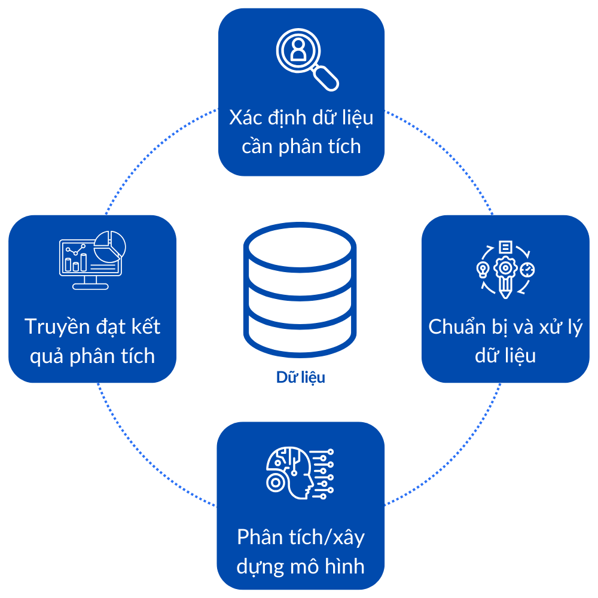
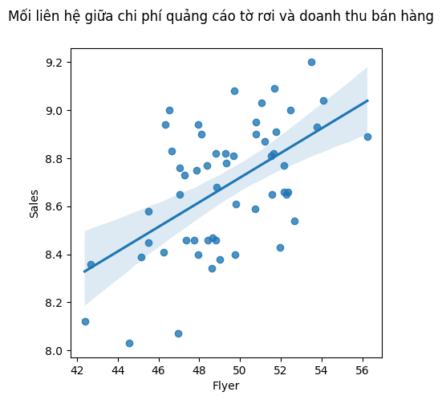

2. Quy trình và công cụ trong Phân tích dữ liệu#
Trong khoảng 10 năm trở lại đây, các doanh nghiệp đã đầu tư mạnh mẽ vào hạ tầng công nghệ thông tin, cho phép thu thập dữ liệu một cách toàn diện trên hầu hết mọi khía cạnh hoạt động – từ sản xuất, vận hành, chuỗi cung ứng đến hành vi khách hàng, hiệu quả marketing, quy trình nội bộ và cả các yếu tố bên ngoài như xu hướng thị trường hay hoạt động của đối thủ. Sự phong phú và sẵn có của dữ liệu đã thúc đẩy nhu cầu cấp thiết về các phương pháp trích xuất thông tin và tri thức hữu ích – chính là Khoa học dữ liệu.
Trong bối cảnh hiện đại, khối lượng và tốc độ dữ liệu gia tăng nhanh chóng đã vượt quá khả năng xử lý của các phương pháp truyền thống. Cùng lúc, năng lực tính toán và các thuật toán phân tích phát triển mạnh mẽ đã mở ra cơ hội ứng dụng dữ liệu sâu rộng trong thực tiễn. Tuy nhiên, trong các lĩnh vực như kinh tế và kinh doanh, nơi mà việc ra quyết định thường diễn ra dưới áp lực thời gian, điều kiện dữ liệu không toàn vẹn và sẵn sàng, thì không phải lúc nào cũng có thể triển khai toàn bộ chu trình khoa học dữ liệu một cách đầy đủ và bài bản. Thay vào đó, các tổ chức và nhà quản lý thường lựa chọn phân tích dữ liệu như một công cụ linh hoạt và thực tiễn hơn để trả lời nhanh chóng các câu hỏi cụ thể, phục vụ cho các quyết định ngắn hạn hoặc tình huống đòi hỏi phản ứng nhanh.
Như đã trình bày ở Chương trước, khoa học dữ liệu là lĩnh vực bao trùm, định hướng xây dựng một hệ thống tổng thể gồm các nguyên lý, phương pháp và công cụ để xử lý, phân tích và khai thác dữ liệu từ đầu đến cuối – từ xác định vấn đề, thu thập dữ liệu, xây dựng mô hình đến truyền đạt kết quả và tự động ra quyết định. Trong khi đó, phân tích dữ liệu (data analytics) thường tập trung vào một hoặc một số bước cụ thể trong chu trình đó, với mục tiêu giải quyết nhanh gọn và hiệu quả một bài toán thực tiễn cụ thể và hỗ trợ ra quyết định. Nói cách khác, phân tích dữ liệu là phần “ứng dụng linh hoạt” của khoa học dữ liệu trong môi trường có nhiều ràng buộc về thời gian và nguồn lực – đặc biệt phổ biến trong các quyết định kinh tế – kinh doanh hàng ngày.
2.1. Quy trình Phân tích dữ liệu#
Quy trình phân tích dữ liệu có thể được xem là một quy trình đơn giản của quy trình khoa học dữ liệu tổng thể nhằm giải quyết những vấn đề cụ thể trong điều kiện thời gian và nguồn lực hạn chế. Nếu như khoa học dữ liệu bao gồm toàn bộ các hoạt động từ tự động hóa thu thập dữ liệu, quản lý hạ tầng, xây dựng mô hình học máy, triển khai hệ thống và ra quyết định chiến lược, thì phân tích dữ liệu tập trung chủ yếu vào việc khai thác dữ liệu hiện có để hỗ trợ ra quyết định nhanh chóng và hiệu quả. Chu trình phân tích dữ liệu thường bao gồm năm bước cơ bản, bao gồm
Xác định dữ liệu cần phân tích
Chuẩn bị dữ liệu
Phân tích dữ liệu
Truyền đạt kết quả
Các bước trong chu trình được mô tả như sau:
{kind=link}

Fig. 2.1 Quy trình Phân tích dữ liệu (Data analytic process)#
Xác định dữ liệu cần phân tích Dựa trên mục tiêu phân tích, người thực hiện cần xác định các nguồn dữ liệu phù hợp: dữ liệu nội bộ hay bên ngoài, định lượng hay định tính, dữ liệu có sẵn hay cần thu thập thêm. Cần xem xét tính sẵn có, độ tin cậy và chi phí khai thác của các nguồn dữ liệu này.
Chuẩn bị và xử lý dữ liệu Bao gồm các bước làm sạch dữ liệu, xử lý thiếu dữ liệu, mã hóa biến phân loại, chuẩn hóa đơn vị đo lường, và sắp xếp dữ liệu ở định dạng phù hợp để phân tích. Đây là giai đoạn tốn thời gian nhưng đóng vai trò then chốt trong đảm bảo chất lượng kết quả.
Phân tích dữ liệu Sử dụng các kỹ thuật thống kê mô tả, phân tích khám phá, trực quan hóa dữ liệu hoặc mô hình hóa (nếu cần) để tìm ra các quy luật, xu hướng hoặc mối quan hệ trong dữ liệu. Mức độ phức tạp của bước này phụ thuộc vào mục tiêu ban đầu và kỹ năng của người phân tích.
Truyền đạt kết quả Kết quả phân tích cần được trình bày theo cách dễ hiểu, có thể là bảng biểu, biểu đồ, dashboard hoặc báo cáo. Việc truyền đạt tốt giúp người ra quyết định hiểu được hàm ý thực tiễn và hành động phù hợp. Trong nhiều trường hợp, đây cũng là bước tạo giá trị cuối cùng của toàn bộ quá trình.
Chu trình phân tích dữ liệu này đặc biệt phù hợp với bối cảnh kinh tế và kinh doanh, nơi các quyết định cần được đưa ra nhanh chóng và không phải lúc nào cũng có điều kiện triển khai đầy đủ một hệ thống khoa học dữ liệu tổng thể. Tuy đơn giản hơn, nhưng quy trình này vẫn yêu cầu người thực hiện có tư duy phân tích, khả năng đánh giá dữ liệu, và kỹ năng truyền thông hiệu quả — những năng lực ngày càng quan trọng trong môi trường ra quyết định dựa trên dữ liệu (data-driven decision-making).
Trong các phần tiếp theo, chúng ta sẽ đi sâu vào từng bước trong chu trình phân tích dữ liệu, đồng thời giới thiệu các phương pháp và công cụ phù hợp được sử dụng phổ biến trong thực tiễn để hỗ trợ quá trình triển khai hiệu quả.
2.2. Xác định dữ liệu cần phân tích#
2.2.1. Các bước xác định dữ liệu#
2.2.1.1. Làm rõ loại thông tin cần thu thập#
Quy trình xác định dữ liệu bắt đầu từ việc làm rõ loại thông tin cần thu thập, dựa trên mục tiêu cụ thể của bài toán phân tích. Ở bước này, người phân tích cần trả lời hai câu hỏi then chốt:
Những thông tin cụ thể nào là cần thiết để giải quyết mục tiêu kinh doanh hoặc nghiên cứu?
Những nguồn dữ liệu nào có thể cung cấp các thông tin đó một cách đáng tin cậy và kịp thời?
Việc lựa chọn dữ liệu cần thu thập luôn phụ thuộc trực tiếp vào mục tiêu nghiên cứu hoặc bài toán đặt ra. Chẳng hạn, giả sử một doanh nghiệp sản xuất hàng tiêu dùng muốn triển khai chiến dịch tiếp thị hướng đến nhóm khách hàng theo độ tuổi có tỷ lệ mua hàng cao nhất. Mục tiêu của họ là thiết kế các hoạt động marketing phù hợp nhằm duy trì lòng trung thành, tăng tần suất mua sắm và khuếch đại hiệu ứng truyền miệng trong cộng đồng. Trong trường hợp này, bộ dữ liệu cần thu thập có thể bao gồm:
Hồ sơ khách hàng (Customer Profile): tên, tuổi, giới tính, khu vực sinh sống, nghề nghiệp.
Lịch sử giao dịch: tần suất mua hàng, giá trị đơn hàng, danh mục sản phẩm đã mua.
Thông tin nhân khẩu học: độ tuổi, trình độ học vấn, thu nhập, tình trạng hôn nhân.
Ngoài ra, để có cái nhìn toàn diện hơn về trải nghiệm và mức độ hài lòng của khách hàng, doanh nghiệp có thể thu thập thêm:
Dữ liệu khiếu nại hoặc phản hồi tiêu cực: nhằm xác định các vấn đề thường gặp làm ảnh hưởng đến quyết định tái mua hoặc giới thiệu sản phẩm.
Kết quả khảo sát mức độ hài lòng: như Net Promoter Score (NPS) hoặc chỉ số hài lòng khách hàng (CSAT).
Dữ liệu tương tác mạng xã hội: bao gồm lượt thích, chia sẻ, bình luận trên Facebook, Instagram hoặc các nền tảng khác – là những chỉ báo gián tiếp cho mức độ lan tỏa và ảnh hưởng xã hội.
Trong một ví dụ khác, chẳng hạn một chuỗi bán lẻ thời trang muốn cá nhân hóa đề xuất sản phẩm trên ứng dụng di động, nhằm tăng tỷ lệ chuyển đổi mua hàng và giá trị giỏ hàng trung bình của từng khách hàng. Mục tiêu của họ là đưa ra các gợi ý phù hợp với sở thích, hành vi và khả năng chi trả của từng người dùng, từ đó tăng hiệu quả bán hàng và mức độ gắn bó với thương hiệu. Trong trường hợp này, các loại dữ liệu cần thu thập bao gồm:
Lịch sử duyệt sản phẩm và hành vi tương tác: khách hàng thường xem sản phẩm nào, thời điểm truy cập, có hay thêm vào giỏ hàng không.
Lịch sử mua hàng: sản phẩm đã mua, loại sản phẩm (áo, váy, giày…), mức giá trung bình, tần suất mua.
Thông tin tài khoản và hồ sơ người dùng: độ tuổi, giới tính, khu vực sinh sống, sở thích đã khai báo.
Dữ liệu thiết bị và nền tảng sử dụng: khách hàng chủ yếu mua qua app hay web, hệ điều hành gì, thời gian hoạt động nhiều nhất.
Nếu hệ thống ghi nhận rằng một khách hàng nữ, 22 tuổi, sống tại Hà Nội, thường xuyên xem các mẫu váy công sở trong tầm giá 500.000–700.000 đồng vào buổi tối cuối tuần, thì hệ thống gợi ý sản phẩm có thể ưu tiên:
Các mẫu váy cùng phân khúc giá
Các ưu đãi giới hạn thời gian vào cuối tuần
Các chương trình khuyến mãi tại cửa hàng gần khu vực Hà Nội
Ngoài ra, để nâng cao hiệu quả cá nhân hóa, chuỗi bán lẻ thời trang có thể cân nhắc thu thập thêm các dữ liệu sau:
Dữ liệu phản hồi sản phẩm: đánh giá về chất lượng, kích cỡ, kiểu dáng để phân tích mức độ hài lòng.
Hành vi hoàn trả hàng (return behavior): nhằm tránh đề xuất các dòng sản phẩm mà khách hàng từng trả lại.
Tương tác trên mạng xã hội hoặc email marketing: khách hàng đã nhấp vào những sản phẩm nào từ email, đã chia sẻ lookbook nào lên mạng xã hội – đây là những tín hiệu bổ sung về gu thẩm mỹ và mức độ quan tâm thực tế.
Như vậy, có thể thấy rằng việc làm rõ các thông tin cần thu thập sẽ giúp xây dựng được bộ dữ liệu phù hợp với mục tiêu gợi ý sản phẩm cá nhân hóa, thay vì thu thập dữ liệu dàn trải hoặc không hỗ trợ trực tiếp cho bài toán ra quyết định.
2.2.1.2. Lập kế hoạch thu thập dữ liệu#
Sau khi xác định được các loại thông tin cần thu thập, bước tiếp theo là lập kế hoạch thu thập dữ liệu một cách cụ thể và khả thi. Một kế hoạch hiệu quả cần trả lời được ba nhóm câu hỏi chính: thu thập khi nào, bao nhiêu là đủ, và cần lưu ý điều gì trong quá trình triển khai?
Xác định khung thời gian thu thập dữ liệu:
Việc lựa chọn thời gian thu thập ảnh hưởng lớn đến tính đại diện và độ chính xác của dữ liệu. Một số loại dữ liệu cần được cập nhật theo thời gian thực (real-time), trong khi các loại khác chỉ cần thu thập tại một thời điểm cố định.
Trong ngành hàng tiêu dùng, để đánh giá mức độ tương tác của nhóm khách hàng 25–34 tuổi trong một chiến dịch khuyến mãi kéo dài 7 ngày, doanh nghiệp cần lên kế hoạch thu thập dữ liệu truy cập website và lượt mua hàng theo thời gian thực trong suốt thời gian diễn ra sự kiện, đồng thời so sánh với dữ liệu trước và sau chiến dịch để đánh giá hiệu quả.
Trong chuỗi bán lẻ mặt hàng thời trang, hành vi duyệt sản phẩm của người dùng trên ứng dụng thường biến động theo mùa hoặc thời điểm (ví dụ: cuối tuần, lễ Tết, mùa Back-to-school), do đó cần thu thập dữ liệu hành vi theo chu kỳ định kỳ, chẳng hạn mỗi tuần một lần, để đảm bảo hệ thống đề xuất sản phẩm luôn phản ánh đúng sở thích hiện tại.
Xác định quy mô và chiều sâu của dữ liệu cần thu thập:
Việc thu thập quá ít dữ liệu có thể dẫn đến kết quả phân tích thiếu độ tin cậy, trong khi thu thập quá nhiều có thể gây lãng phí tài nguyên và thời gian xử lý. Cần xác định kích thước mẫu đủ lớn và phù hợp với mục tiêu phân tích.
Trong ngành hàng tiêu dùng: nếu mục tiêu là phân tích hành vi mua sắm của nhóm khách hàng 25–34 tuổi, doanh nghiệp có thể quyết định thu thập toàn bộ dữ liệu của nhóm này trong 3 tháng gần nhất, hoặc chỉ lấy mẫu ngẫu nhiên gồm 100.000 khách hàng đại diện cho toàn bộ nhóm.
Đối với chuỗi bán lẻ thời trang, nếu muốn cải thiện thuật toán gợi ý sản phẩm, có thể cần thu thập khoảng 10 lần tương tác gần nhất của mỗi khách hàng đang hoạt động trong tháng qua – để đảm bảo thuật toán học được xu hướng mới và không bị sai lệch do dữ liệu lỗi thời.
Xác định các rủi ro, phụ thuộc và phương án xử lý:
Quá trình thu thập dữ liệu có thể gặp phải các vấn đề như mất kết nối hệ thống, thiếu dữ liệu từ một số nguồn, khách hàng từ chối chia sẻ thông tin, hoặc xung đột định dạng dữ liệu giữa các nền tảng. Do đó, kế hoạch cần liệt kê rõ:
Các nguồn dữ liệu chính và dự phòng
Các biện pháp kiểm tra chất lượng dữ liệu đầu vào
Các biện pháp xử lý dữ liệu bị thiếu hoặc lỗi
Với ngành tiêu dùng, nếu dữ liệu nhân khẩu học từ một hệ thống CRM đã cũ và có độ tin cậy thấp, cần kết hợp với dữ liệu từ khảo sát online hoặc dữ liệu mạng xã hội để xác minh chéo với dữ liệu cũ.
Đối với chuỗi bán lẻ thời trang, nếu một phần dữ liệu lịch sử duyệt sản phẩm bị thiếu do người dùng truy cập ứng dụng khi đang offline, hệ thống cần có cơ chế đồng bộ lại khi kết nối Internet được khôi phục.
2.2.1.3. Lựa chọn phương pháp thu thập dữ liệu#
Sau khi xác định rõ loại thông tin cần thu thập và xây dựng kế hoạch triển khai, bước tiếp theo trong quy trình là lựa chọn phương pháp thu thập dữ liệu. Ở giai đoạn này, người phân tích cần quyết định sử dụng phương thức kỹ thuật nào và công cụ nào để thu thập dữ liệu từ các nguồn đã được xác định trước. Các nguồn dữ liệu này có thể là:
Hệ thống nội bộ: cơ sở dữ liệu giao dịch, hồ sơ khách hàng, nhật ký truy cập hệ thống;
Nguồn dữ liệu trực tuyến: mạng xã hội, website, ứng dụng di động;
Dữ liệu từ bên thứ ba: nhà cung cấp dữ liệu thị trường, dữ liệu nhân khẩu học, dữ liệu định vị.
Lựa chọn phương pháp thu thập sẽ phụ thuộc vào các yếu tố chính sau:
Loại dữ liệu cần thu thập: ví dụ dữ liệu định lượng như tần suất mua hàng có thể được truy xuất từ cơ sở dữ liệu nội bộ, trong khi dữ liệu định tính như cảm xúc của khách hàng thường cần khai thác từ phản hồi văn bản hoặc bài đăng mạng xã hội.
Tính chất thời gian của dữ liệu: nếu dữ liệu cần cập nhật theo thời gian thực, thì phương pháp thu thập phải có tính tự động và liên tục – chẳng hạn sử dụng API để kết nối trực tiếp với nền tảng mạng xã hội hoặc hệ thống ghi nhận hành vi người dùng trong ứng dụng. Ngược lại, nếu dữ liệu chỉ cần thu thập một lần hoặc định kỳ, có thể áp dụng khảo sát thủ công, xuất dữ liệu theo lô (batch export), hoặc thu thập theo phiên (session-based logging).
Khối lượng và tốc độ dữ liệu: với dữ liệu có khối lượng lớn, cần áp dụng các giải pháp thu thập tự động như sử dụng công cụ ETL (Extract – Transform – Load), pipeline dữ liệu theo thời gian thực (real-time streaming) hoặc lưu trữ tạm thời qua hệ thống message queue. Nếu dữ liệu ít hơn hoặc có thể thu thập theo đợt, phương pháp bán tự động (semi-automated) như biểu mẫu nhập liệu hoặc crawl định kỳ sẽ phù hợp hơn.
Ví dụ trong ngành hàng tiêu dùng, để phân tích hành vi mua hàng và hiệu ứng lan tỏa xã hội của nhóm khách hàng 25–34 tuổi, doanh nghiệp có thể:
Truy xuất lịch sử giao dịch từ hệ thống CRM thông qua truy vấn SQL hoặc API nội bộ;
Thu thập dữ liệu mạng xã hội (bài đăng, lượt chia sẻ, tương tác) thông qua công cụ lắng nghe xã hội (social listening tools như Brandwatch, Hootsuite);
Kết hợp với dữ liệu khảo sát mức độ hài lòng qua Google Forms hoặc hệ thống khảo sát tích hợp sẵn trên website.
Tương tự, trong chuỗi bán lẻ thời trang, để cá nhân hóa việc gợi ý sản phẩm, chuyên gia phân tích cần:
Tích hợp trình ghi hành vi người dùng trên app, chẳng hạn như công cụ event tracking qua Google Analytics, Firebase hoặc công cụ riêng;
Kết nối API để truy xuất dữ liệu thời gian thực về lượt nhấp, lượt thêm vào giỏ hàng;
Thu thập dữ liệu đánh giá sản phẩm và phản hồi qua hệ thống bình luận hoặc chatbot tự động.
Việc lựa chọn đúng phương pháp thu thập dữ liệu không chỉ ảnh hưởng đến chất lượng và tính kịp thời của dữ liệu, mà còn quyết định tính khả thi và hiệu quả chi phí của toàn bộ dự án phân tích. Do đó, bước này cần được thiết kế kỹ lưỡng và đồng bộ với các điều kiện kỹ thuật và nguồn lực của tổ chức.
2.2.2. Những lưu ý trong quá trình thu thập dữ liệu#
Sau khi kế hoạch và phương pháp thu thập dữ liệu đã được xác lập, quá trình triển khai có thể được tiến hành. Tuy nhiên, trong thực tế, việc thực thi cần có sự linh hoạt điều chỉnh dựa trên các yếu tố phát sinh trong quá trình vận hành. Những thay đổi về nguồn dữ liệu, gián đoạn kỹ thuật, phản hồi từ đối tượng khảo sát hay các yêu cầu pháp lý mới đều có thể ảnh hưởng đến tiến độ và chất lượng thu thập dữ liệu.
Việc lựa chọn loại dữ liệu, nguồn dữ liệu và phương pháp thu thập không chỉ ảnh hưởng đến hiệu quả kỹ thuật mà còn tác động trực tiếp đến chất lượng, tính bảo mật và tuân thủ quyền riêng tư – những yếu tố có vai trò xuyên suốt trong toàn bộ vòng đời phân tích dữ liệu.
2.2.2.1. Chất lượng dữ liệu#
Dữ liệu có chất lượng cao là điều kiện tiên quyết để đưa ra những phân tích hiệu quả. Dữ liệu thu thập cần đáp ứng các yêu cầu sau:
Tính chính xác (accuracy): phản ánh đúng thực tế cần đo lường.
Tính đầy đủ (completeness): không bị thiếu hụt thông tin quan trọng.
Tính nhất quán (consistency): không mâu thuẫn giữa các nguồn hoặc giữa các trường dữ liệu.
Tính phù hợp (relevance): liên quan trực tiếp đến mục tiêu phân tích.
Tính sẵn sàng truy cập (accessibility): dễ dàng khai thác và sử dụng đúng cách.
Để đảm bảo chất lượng dữ liệu, cần thiết lập các tiêu chí và chỉ số đánh giá cụ thể, đồng thời bố trí các điểm kiểm tra (checkpoints) trong toàn bộ quy trình thu thập và xử lý. Nếu bỏ qua bước này, phân tích có thể dẫn đến sai lệch và kéo theo các quyết định sai lầm.
2.2.2.2. Quản trị dữ liệu#
Một nội dung không thể tách rời với thu thập dữ liệu là quản trị dữ liệu (data governance) – hệ thống các chính sách, quy trình và quy định nhằm kiểm soát cách thức dữ liệu được thu thập, lưu trữ, truy cập và sử dụng. Các khía cạnh cốt lõi cần lưu ý bao gồm:
Tuân thủ quy định pháp lý: Dữ liệu phải được xử lý phù hợp với các quy định hiện hành (ví dụ: luật bảo vệ dữ liệu cá nhân, GDPR, v.v.). Vi phạm có thể dẫn đến hậu quả tài chính nghiêm trọng và ảnh hưởng tiêu cực đến uy tín tổ chức.
Bảo mật dữ liệu: Cần áp dụng các biện pháp bảo mật như mã hóa, kiểm soát truy cập, ghi nhật ký truy vết để ngăn chặn rò rỉ hoặc sử dụng trái phép.
Bảo vệ quyền riêng tư cá nhân: Việc thu thập và xử lý dữ liệu cá nhân phải có sự đồng thuận, minh bạch, và cho phép cá nhân thực hiện các quyền hợp pháp của mình (xem, chỉnh sửa, yêu cầu xóa).
Không có các biện pháp quản trị dữ liệu bài bản sẽ không chỉ làm suy giảm niềm tin của người sử dụng vào độ tin cậy và tính hợp lệ của dữ liệu, mà còn có thể đẩy tổ chức vào những rủi ro pháp lý và đạo đức nghiêm trọng. Vi phạm các quy định về quyền riêng tư, sử dụng dữ liệu không đúng mục đích hoặc thu thập dữ liệu không có sự đồng thuận rõ ràng từ người cung cấp có thể dẫn đến hậu quả nghiêm trọng về cả tài chính, uy tín và trách nhiệm xã hội. Bên cạnh đó, thiếu cơ chế kiểm soát, truy vết và xác thực trong quá trình thu thập còn khiến dữ liệu trở nên kém minh bạch, khó kiểm chứng và không phù hợp để phục vụ cho các phân tích chuyên sâu trong môi trường kinh doanh hiện đại.
2.2.3. Các nguồn dữ liệu có thể tiếp cận#
2.2.3.1. Phân loại các nguồn dữ liệu#
Trong lĩnh vực kinh tế và kinh doanh, dữ liệu đóng vai trò trung tâm trong việc hỗ trợ ra quyết định, xây dựng chiến lược, dự báo xu hướng và đánh giá hiệu quả hoạt động. Các nguồn dữ liệu được sử dụng trong phân tích có thể được phân loại theo nhiều tiêu chí, trong đó phổ biến nhất là theo nguồn gốc sở hữu: dữ liệu sơ cấp, dữ liệu thứ cấp và dữ liệu từ bên thứ ba. Hiểu rõ bản chất và đặc điểm của từng loại sẽ giúp nhà phân tích lựa chọn được nguồn dữ liệu phù hợp với mục tiêu và bối cảnh nghiên cứu cụ thể.
Dữ liệu sơ cấp là dữ liệu được thu thập trực tiếp từ nguồn gốc ban đầu, thường do chính doanh nghiệp hoặc nhóm nghiên cứu triển khai. Trong kinh tế – kinh doanh, dữ liệu sơ cấp có thể bao gồm:
Dữ liệu nội bộ từ hệ thống quản trị doanh nghiệp (ERP), quản lý khách hàng (CRM), bán hàng (POS), tài chính – kế toán (accounting software).
Khảo sát khách hàng, phỏng vấn chuyên sâu với nhân viên bán hàng hoặc đối tác cung ứng.
Quan sát thực địa, như hành vi khách hàng trong siêu thị, thời gian lưu lại trên từng khu vực quầy hàng.
Dữ liệu thứ cấp là dữ liệu được thu thập từ các nguồn đã có sẵn, thường không được tạo ra trực tiếp bởi tổ chức phân tích, nhưng vẫn hữu ích cho việc nghiên cứu hoặc ra quyết định. Trong bối cảnh kinh tế – kinh doanh, dữ liệu thứ cấp có thể bao gồm:
Số liệu thống kê chính thức: dữ liệu từ Tổng cục Thống kê, Ngân hàng Thế giới (World Bank), IMF,…
Báo cáo ngành, phân tích thị trường, nghiên cứu học thuật, tài liệu từ các tổ chức tư vấn như McKinsey, PwC,…
Cơ sở dữ liệu nghiên cứu thị trường đã được công bố (ví dụ: khảo sát người tiêu dùng của Nielsen).
Dữ liệu từ bên thứ ba là loại dữ liệu được mua lại từ các nhà cung cấp dữ liệu chuyên nghiệp. Các tổ chức này thu thập dữ liệu từ nhiều nguồn khác nhau, xử lý và đóng gói thành các bộ dữ liệu thương mại, ví dụ:
Dữ liệu người tiêu dùng từ nền tảng thương mại điện tử.
Dữ liệu hành vi trực tuyến từ công ty phân tích web (ví dụ: SimilarWeb, Semrush).
Dữ liệu xếp hạng tín dụng từ tổ chức như Experian, Moody’s.
Trong thực hành phân tích kinh doanh hiện đại, việc kết hợp linh hoạt giữa dữ liệu sơ cấp, thứ cấp và bên thứ ba là xu hướng phổ biến nhằm nâng cao chất lượng phân tích và tăng cường tính đa chiều của kết quả. Sự kết hợp này không chỉ giúp làm phong phú dữ liệu, mà còn tạo điều kiện để kiểm chứng chéo thông tin, giảm rủi ro sai lệch và hỗ trợ xây dựng các mô hình phân tích có giá trị thực tiễn cao.
2.2.3.2. Các nguồn phổ biến để thu thập dữ liệu trong kinh tế và kinh doanh#
Dữ liệu trong kinh doanh và kinh tế có thể được thu thập từ nhiều nguồn với tính chất, định dạng và phương pháp tiếp cận rất đa dạng. Việc khai thác hiệu quả các nguồn dữ liệu này là nền tảng cho các phân tích định lượng và định tính phục vụ ra quyết định chiến lược. Một số nguồn tiêu biểu bao gồm:
Cơ sở dữ liệu nội bộ: Đây là nguồn dữ liệu quý giá do chính doanh nghiệp tạo ra và kiểm soát, bao gồm dữ liệu đơn hàng, thông tin khách hàng, lịch sử giao dịch, dữ liệu kho vận, dòng tiền, hiệu suất nhân sự hoặc dữ liệu chăm sóc khách hàng. Ví dụ, một công ty thương mại điện tử có thể sử dụng dữ liệu lịch sử mua hàng và lượt truy cập website của khách hàng để xây dựng hệ thống đề xuất sản phẩm cá nhân hóa.
Hệ thống điện toán đám mây: Các nền tảng lưu trữ như Google BigQuery, Amazon Redshift hoặc Microsoft Azure cho phép doanh nghiệp lưu trữ khối lượng lớn dữ liệu và truy cập theo thời gian thực. Ngoài chức năng lưu trữ, chúng còn tích hợp công cụ xử lý và phân tích mạnh mẽ. Chẳng hạn như một ngân hàng có thể sử dụng nền tảng cloud để tổng hợp và phân tích giao dịch thẻ của hàng triệu khách hàng nhằm phát hiện hành vi gian lận trong thời gian thực.
Internet và mạng xã hội: Đây là kho dữ liệu phi cấu trúc khổng lồ bao gồm bài viết, đánh giá, hình ảnh, video, và các phản hồi công khai từ người dùng. Thông qua phân tích nội dung bình luận và đánh giá sản phẩm trên Shopee, TikTok và Facebook, các công ty có thể xác định điểm mạnh, điểm yếu và cảm nhận thương hiệu từ phía khách hàng.
Thiết bị cảm biến và IoT: Dữ liệu từ thiết bị cảm biến đang ngày càng phổ biến trong các hệ thống thông minh như thành phố thông minh, chuỗi cung ứng thông minh, hay y tế từ xa. Một ví dụ cho nguồn dữ liệu này là dữ liệu thu thập từ cảm biến GPS và cảm biến nhiệt độ gắn trên xe vận chuyển để theo dõi vị trí và điều kiện bảo quản hàng hóa trong thời gian thực của các công ty logistic. Hoặc các siêu thị và trung tâm thương mại lớn sử dụng cảm biến hồng ngoại để đo mật độ khách hàng theo từng khung giờ trong ngày.
Khảo sát và phỏng vấn: Đây là phương pháp cổ điển nhưng vẫn rất hiệu quả trong việc thu thập dữ liệu định tính và định lượng trực tiếp từ người dùng, nhân viên, chuyên gia, hay nhà cung ứng. Ví dụ, một doanh nghiệp có thể thực hiện khảo sát trực tiếp mức độ hài lòng của khách hàng với dịch vụ hậu mãi, hoặc tổ chức phỏng vấn sâu với nhân viên để tìm hiểu nguyên nhân rời bỏ tổ chức.
Trao đổi dữ liệu (data sharing): Là hình thức hợp tác giữa các bên để chia sẻ dữ liệu phục vụ cho mục tiêu phân tích chung hoặc hai bên cùng có lợi. Ví dụ, một công ty thương mại điện tử hợp tác với công ty vận chuyển để chia sẻ dữ liệu giao hàng nhằm tối ưu hóa định tuyến đơn hàng; hoặc ngân hàng chia sẻ dữ liệu hành vi tiêu dùng với công ty bảo hiểm để hỗ trợ xây dựng hồ sơ khách hàng tích hợp.
2.2.4. Phương pháp và công cụ trong thu thập dữ liệu#
Trong lĩnh vực kinh tế và kinh doanh, dữ liệu được thu thập từ nhiều nguồn khác nhau để phục vụ cho các mục tiêu như phân tích thị trường, đánh giá hiệu suất, dự báo nhu cầu, phân khúc khách hàng, hoặc tối ưu hóa chuỗi cung ứng. Để khai thác hiệu quả các nguồn dữ liệu này, cần lựa chọn phương pháp và công cụ phù hợp với loại dữ liệu, quy mô hệ thống, và yêu cầu phân tích.
2.2.4.1. Truy vấn cơ sở dữ liệu bằng SQL và các ngôn ngữ tương đương#
Structured Query Language (SQL) là ngôn ngữ truy vấn có cấu trúc, được chuẩn hóa và sử dụng rộng rãi trong các hệ quản trị cơ sở dữ liệu quan hệ (Relational Database Management Systems – RDBMS) như MySQL, PostgreSQL, Oracle Database và Microsoft SQL Server. SQL cho phép người dùng định nghĩa, thao tác và truy vấn dữ liệu thông qua các lệnh tiêu chuẩn như SELECT, INSERT, UPDATE, DELETE, GROUP BY, JOIN, và ORDER BY. Các thao tác này hỗ trợ người dùng trích xuất thông tin một cách linh hoạt, bao gồm lọc dữ liệu theo điều kiện, nhóm các bản ghi theo tiêu chí cụ thể, sắp xếp kết quả, cũng như kết nối nhiều bảng dữ liệu thông qua các khóa liên kết.
Trong bối cảnh thực tiễn, SQL được sử dụng rộng rãi trong nhiều lĩnh vực như tài chính – ngân hàng, thương mại điện tử, logistics và quản trị khách hàng. Ví dụ, một hệ thống CRM có thể sử dụng SQL để truy vấn danh sách khách hàng theo khu vực và mức độ tương tác; hệ thống bán lẻ sử dụng SQL để tổng hợp doanh thu theo sản phẩm, thời gian hoặc khu vực địa lý; trong phân tích tài chính, SQL hỗ trợ tổng hợp dữ liệu giao dịch, phân loại danh mục đầu tư hoặc đánh giá hiệu suất tài sản.
Ngoài các hệ thống dữ liệu quan hệ, sự phát triển của dữ liệu lớn và các mô hình dữ liệu phi truyền thống đã dẫn đến sự ra đời của các hệ thống cơ sở dữ liệu phi quan hệ (NoSQL) như MongoDB, Cassandra, Neo4j và Redis. Trong các hệ thống này, các ngôn ngữ truy vấn tương ứng được phát triển để thay thế hoặc bổ sung vai trò của SQL. Chẳng hạn:
Cassandra Query Language (CQL) được thiết kế theo cú pháp tương tự SQL, nhưng tối ưu cho việc thao tác với dữ liệu phân tán trong hệ thống NoSQL Cassandra.
MongoDB Query Language (MQL) sử dụng cú pháp dạng JSON để truy vấn và thao tác dữ liệu tài liệu (document-based).
GraphQL, ban đầu được phát triển bởi Facebook, là một ngôn ngữ truy vấn linh hoạt cho phép người dùng chỉ định chính xác dữ liệu cần truy xuất, rất phù hợp với các hệ thống ứng dụng hiện đại cần hiệu quả về băng thông và độ phản hồi.
Tóm lại, SQL và các ngôn ngữ truy vấn tương đương trong hệ NoSQL là những công cụ không thể thiếu trong hệ sinh thái xử lý và phân tích dữ liệu hiện đại. Việc hiểu và sử dụng thành thạo các ngôn ngữ này là nền tảng thiết yếu cho các nhà phân tích dữ liệu, kỹ sư dữ liệu và chuyên gia khoa học dữ liệu trong quá trình khai thác, xử lý và trực quan hóa dữ liệu từ nhiều nguồn khác nhau.
2.2.4.2. Truy cập dữ liệu thông qua API#
API (Application Programming Interface) là một giao diện lập trình ứng dụng, cho phép các hệ thống phần mềm khác nhau giao tiếp và trao đổi dữ liệu với nhau một cách có cấu trúc và an toàn. Trong bối cảnh thu thập và tích hợp dữ liệu, API ngày càng đóng vai trò then chốt khi dữ liệu không chỉ tồn tại trong nội bộ tổ chức mà còn phân tán trên các nền tảng bên ngoài như hệ thống đối tác, nhà cung cấp dữ liệu, nền tảng thanh toán số, hoặc dịch vụ bên thứ ba.
API cho phép tự động hóa quá trình truy xuất và đồng bộ dữ liệu theo thời gian thực hoặc định kỳ, giúp giảm thiểu thao tác thủ công, đảm bảo tính cập nhật và độ tin cậy của dữ liệu đầu vào. Với các giao thức phổ biến như RESTful API hoặc GraphQL API, dữ liệu có thể được truy xuất dưới dạng JSON hoặc XML – dễ dàng tích hợp với các công cụ xử lý dữ liệu hiện đại như Python, R hoặc các nền tảng ETL.
Trong thực tế, một ứng dụng ngân hàng có thể sử dụng API để đồng bộ dữ liệu giao dịch thẻ từ hệ thống thanh toán, giúp khách hàng theo dõi chi tiêu theo thời gian thực. Doanh nghiệp thương mại điện tử có thể kết nối với dịch vụ kiểm tra mã bưu chính hoặc API cung cấp dữ liệu vị trí để xác thực địa chỉ giao hàng và phân tích hành vi người dùng theo khu vực địa lý. Trong lĩnh vực tài chính, các công ty có thể thu thập dữ liệu chi tiêu và lịch sử tín dụng từ nền tảng tiêu dùng thông qua API, từ đó xây dựng mô hình đánh giá rủi ro và cá nhân hóa đề xuất sản phẩm vay phù hợp với từng khách hàng. Ngoài ra, các tổ chức nghiên cứu thị trường thường khai thác API của mạng xã hội, sàn thương mại điện tử hoặc Google Trends để thu thập dữ liệu phản hồi khách hàng, theo dõi xu hướng tiêu dùng và đánh giá hiệu quả của các chiến dịch tiếp thị. Việc sử dụng API như vậy không chỉ giúp đảm bảo tính cập nhật và đa dạng của dữ liệu, mà còn nâng cao khả năng tự động hóa và tối ưu hóa quy trình phân tích trong môi trường kinh doanh hiện đại.
2.2.4.3. Web Scraping – khai thác dữ liệu từ Internet#
Web scraping là kỹ thuật thu thập dữ liệu tự động từ các trang web công khai bằng cách sử dụng các công cụ và thư viện lập trình như BeautifulSoup, Scrapy, hoặc Selenium. Đây là một phương pháp phổ biến để truy xuất dữ liệu trong những trường hợp mà hệ thống không cung cấp API hoặc dữ liệu không có sẵn ở định dạng dễ xử lý.
Thông qua web scraping, người dùng có thể truy xuất thông tin từ mã HTML của trang web, trích xuất các thành phần như văn bản, hình ảnh, bảng biểu, hoặc liên kết và chuyển chúng thành dữ liệu có cấu trúc để phục vụ cho phân tích.
Ví dụ: Một công ty thương mại điện tử có thể áp dụng web scraping để thu thập dữ liệu về giá sản phẩm, chương trình khuyến mãi, và đánh giá khách hàng từ các đối thủ như Shopee, Lazada hoặc Tiki nhằm theo dõi chiến lược giá cả và phản ứng của thị trường. Ngoài ra, các tổ chức nghiên cứu thị trường cũng thường sử dụng kỹ thuật này để khai thác dữ liệu từ các diễn đàn, trang tin tức hoặc blog, phục vụ cho việc phân tích xu hướng tiêu dùng, theo dõi sự lan truyền thương hiệu, hoặc phát hiện vấn đề tiềm ẩn trong dư luận trực tuyến.
Mặc dù hiệu quả và linh hoạt, web scraping cần được triển khai cẩn trọng, đặc biệt trong việc tuân thủ các điều khoản sử dụng của trang web, cũng như các quy định về quyền riêng tư và sở hữu dữ liệu.
2.2.4.4. Các phương pháp thu thập dữ liệu khác#
Dữ liệu thời gian thực từ các thiết bị IoT, cảm biến, GPS và ứng dụng di động đang mở ra khả năng phản ứng nhanh với các biến động trong môi trường kinh doanh. Ví dụ, một công ty giao nhận có thể sử dụng dữ liệu GPS theo thời gian thực để giám sát tiến trình vận chuyển, phát hiện tình trạng tắc nghẽn và điều phối lại tuyến đường, từ đó rút ngắn thời gian giao hàng và tối ưu chi phí vận hành.
Các nền tảng trao đổi dữ liệu (Data Exchange Platforms) như AWS Data Exchange, Snowflake Marketplace, Crunchbase hoặc Lotame cho phép doanh nghiệp mua, bán hoặc chia sẻ dữ liệu với các tiêu chuẩn cao về bảo mật và quyền riêng tư. Ví dụ, một công ty bảo hiểm có thể mua dữ liệu hành vi tiêu dùng và vị trí địa lý từ nhà cung cấp bên thứ ba nhằm xây dựng mô hình phân tích rủi ro và cá nhân hóa các gói sản phẩm tín dụng phù hợp với từng phân khúc khách hàng.
Các tổ chức nghiên cứu thị trường như Gartner, Forrester, Nielsen và Kantar cung cấp những bộ dữ liệu có giá trị về xu hướng công nghệ, mức độ chi tiêu quảng cáo, cảm nhận thương hiệu và hành vi tiêu dùng. Ví dụ, doanh nghiệp có thể sử dụng dữ liệu của Nielsen để theo dõi mức độ nhận biết thương hiệu theo thời gian, hoặc dữ liệu từ Kantar để phân tích phản ứng của người tiêu dùng trước một chiến dịch truyền thông mới.
2.2.4.5. Nhập dữ liệu vào hệ thống lưu trữ#
Sau khi dữ liệu được thu thập từ các nguồn khác nhau, bước tiếp theo là nhập dữ liệu vào hệ thống lưu trữ phù hợp để phục vụ cho các hoạt động xử lý, phân tích và trực quan hóa sau này. Việc lựa chọn kiến trúc lưu trữ thích hợp phụ thuộc vào cấu trúc, quy mô và tính chất của dữ liệu, cũng như nhu cầu truy vấn và tích hợp trong tổ chức. Các hệ thống lưu trữ phổ biến đã được đề cập trong phần Kỹ thuật dữ liệu, bao gồm
Cơ sở dữ liệu quan hệ: phù hợp với dữ liệu có cấu trúc như đơn hàng, hồ sơ khách hàng, giao dịch tài chính,… Một số hệ quản trị phổ biến gồm MySQL, PostgreSQL, Oracle, và Microsoft SQL Server.
Cơ sở dữ liệu NoSQL: thích hợp với dữ liệu bán cấu trúc hoặc phi cấu trúc, chẳng hạn như JSON, XML hoặc dữ liệu nhật ký. Hệ thống NoSQL như MongoDB, Cassandra, hoặc Firebase thường được dùng trong ứng dụng web, phân tích log, và lưu trữ dữ liệu thời gian thực.
Hồ dữ liệu: hỗ trợ lưu trữ khối lượng lớn dữ liệu không cấu trúc như hình ảnh, video, dữ liệu mạng xã hội hoặc dữ liệu cảm biến IoT. Các nền tảng phổ biến bao gồm AWS S3, Azure Data Lake và Hadoop HDFS.
Để xử lý dữ liệu từ nhiều nguồn một cách hiệu quả, các công cụ ETL (Extract – Transform – Load) và data pipeline giúp tự động hóa quá trình trích xuất, làm sạch, chuyển đổi và nhập dữ liệu vào hệ thống lưu trữ. Một số công cụ phổ biến bao gồm:
Ngôn ngữ lập trình: Python với các thư viện như
pandas,sqlalchemy,pyodbchay ngôn ngữ R với các thư việntidyverse,DBICác nền tảng ETL như Apache NiFi, Talend, Informatica
Các công cụ xử lý phân tán như Apache Spark, Airflow (điều phối workflow)
Tích hợp dữ liệu vào hệ thống lưu trữ có vai trò vô cùng quan trọng. Việc lựa chọn đúng phương pháp và công cụ lưu trữ dữ liệu đóng vai trò then chốt trong toàn bộ quy trình phân tích dữ liệu kinh tế – kinh doanh. Khả năng tích hợp, mở rộng và tự động hóa sẽ tạo ra lợi thế cạnh tranh cho doanh nghiệp, đồng thời nâng cao hiệu quả trong việc ra quyết định dựa trên dữ liệu chất lượng và kịp thời.
2.3. Xử lý dữ liệu và chuẩn bị cho phân tích#
2.3.1. Các bước Xử lý dữ liệu#
Trong bối cảnh kinh tế và kinh doanh hiện đại, dữ liệu được thu thập từ nhiều nguồn, dưới nhiều hình thức và ở nhiều thời điểm khác nhau. Tuy nhiên, dữ liệu thu được ban đầu (dữ liệu thô) thường chưa ở trạng thái sẵn sàng để phân tích. Chúng có thể bị thiếu thông tin, sai định dạng, dư thừa, trùng lặp hoặc không nhất quán. Chính vì vậy, xử lý dữ liệu trở thành một giai đoạn trung tâm, giúp biến đổi dữ liệu thô thành một bộ dữ liệu hoàn chỉnh, tin cậy và phù hợp với mục tiêu phân tích.
Xử lý dữ liệu là một quy trình lặp đi lặp lại, bao gồm nhiều thao tác nhằm chuẩn bị dữ liệu để phục vụ cho các hoạt động phân tích mô tả, dự báo, phân khúc, ra quyết định, v.v. Trong lĩnh vực kinh tế và kinh doanh, quy trình này thường bao gồm bốn bước chính: khai phá dữ liệu, biến đổi dữ liệu, kiểm định dữ liệu và công bố dữ liệu.
2.3.1.1. Khai phá dữ liệu (Data Exploration)#
Khai phá dữ liệu là bước đầu tiên nhằm hiểu bản chất và cấu trúc của dữ liệu, xác định các đặc điểm nổi bật, mối quan hệ giữa các trường thông tin và các vấn đề tiềm ẩn có thể ảnh hưởng đến phân tích.
Mục tiêu chính: đánh giá sơ bộ chất lượng dữ liệu, phát hiện các biến quan trọng, hiểu được phân bố giá trị và sự tồn tại của các giá trị ngoại lệ, giá trị thiếu hoặc mâu thuẫn logic.
Ví dụ: Một công ty phân phối hàng tiêu dùng khám phá dữ liệu bán hàng để nhận thấy rằng một số bản ghi có giá trị “số lượng sản phẩm bán ra” âm, điều này gợi ý khả năng dữ liệu bị lỗi trong quá trình nhập liệu hoặc xử lý đơn hàng hoàn trả chưa chính xác.
Các công cụ phổ biến cho khai phá dữ liệu bao gồm:
Python: sử dụng
pandas,matplotlib,seaborn,pandas-profiling.R: sử dụng
dplyr,ggplot2,skimr.BI tools: Power BI, Tableau (tạo biểu đồ, bảng tổng hợp và biểu diễn trực quan dữ liệu ban đầu).
2.3.1.2. Biến đổi dữ liệu (Data Transformation)#
Biến đổi dữ liệu là quá trình trung tâm trong xử lý dữ liệu, bao gồm một loạt các thao tác nhằm chuẩn bị và chuyển đổi dữ liệu thành dạng dễ phân tích và phù hợp với mục tiêu cụ thể.
Cấu trúc lại dữ liệu (Data Restructure) là quá trình tổ chức lại định dạng và lược đồ của tập dữ liệu nhằm tạo sự thống nhất giữa các nguồn dữ liệu khác nhau, từ đó hỗ trợ quá trình tích hợp và phân tích hiệu quả hơn. Trong thực tế, dữ liệu có thể được lưu trữ ở nhiều hệ thống độc lập với cấu trúc khác nhau – chẳng hạn dữ liệu đơn hàng từ hệ thống bán lẻ (POS) và dữ liệu phản hồi từ khách hàng trong hệ thống CRM. Để phân tích mối quan hệ giữa trải nghiệm khách hàng và hành vi mua lại, các dữ liệu này cần được kết nối với nhau dựa trên các trường khóa chung như mã khách hàng hoặc địa chỉ email.
Quá trình cấu trúc lại có thể bao gồm thao tác ghép cột (JOIN), nối dòng (UNION), xoay chiều dữ liệu (PIVOT) hoặc chuyển định dạng dài – rộng (MELT). Ví dụ khác bao gồm: tích hợp dữ liệu ngân sách từ bảng Excel với dữ liệu chi tiêu thực tế từ hệ thống kế toán; kết hợp dữ liệu nhân viên từ phòng nhân sự với dữ liệu hiệu suất từ phòng ban nghiệp vụ để đánh giá KPI hoặc hiệu quả công việc.
Chuẩn hóa dữ liệu (Data Normalization) là bước nhằm đảm bảo tính nhất quán, rõ ràng và tối ưu hóa cấu trúc dữ liệu, đặc biệt là khi dữ liệu được thu thập từ nhiều nguồn hoặc nhập liệu thủ công. Việc chuẩn hóa giúp giảm thiểu trùng lặp thông tin, loại bỏ dư thừa, và đảm bảo tính logic trong định dạng dữ liệu. Một ví dụ phổ biến là việc chuẩn hóa định dạng ngày từ các hệ thống khác nhau – chẳng hạn chuyển toàn bộ định dạng “MM/DD/YYYY” và “DD-MM-YY” về chuẩn chung “YYYY-MM-DD”.
Trong các cơ sở dữ liệu khách hàng, người phân tích cũng cần chuẩn hóa giá trị văn bản như giới tính (“Nam”, “nam”, “NAM”) hoặc tên địa phương (“Hà Nội”, “Ha Noi”, “HN”) để đảm bảo phân tích đúng và tránh đếm trùng. Chuẩn hóa cũng có thể bao gồm mã hóa biến phân loại hoặc tách cột thông tin phức hợp (ví dụ tách họ tên thành hai cột riêng biệt).
Làm sạch dữ liệu (Data Cleaning) là một giai đoạn không thể thiếu nhằm phát hiện và xử lý các lỗi phổ biến trong tập dữ liệu, bao gồm giá trị thiếu, giá trị bất thường, dữ liệu trùng lặp hoặc sai lệch logic. Việc làm sạch đảm bảo rằng dữ liệu phản ánh đúng thực tế và không làm sai lệch kết quả phân tích. Ví dụ, nếu trong bảng dữ liệu giao dịch, một số đơn hàng có giá trị âm hoặc ngày giao dịch lớn hơn ngày hiện tại, thì cần được kiểm tra và xử lý.
Các kỹ thuật thường được sử dụng bao gồm lọc các bản ghi không hợp lệ, thay thế giá trị thiếu bằng trung bình hoặc trung vị, loại bỏ bản ghi trùng lặp, xử lý ngoại lệ (outlier) và xác thực quy tắc nghiệp vụ. Trong phân tích khách hàng, nếu cột “ngày sinh” bị thiếu với 15% bản ghi, người phân tích cần quyết định giữa việc ước lượng lại, thay thế bằng giá trị phổ biến, hay loại bỏ bản ghi đó khỏi phân tích.
Làm giàu dữ liệu là quá trình bổ sung thêm thông tin từ các nguồn nội bộ hoặc bên ngoài nhằm tăng cường chiều sâu và giá trị của tập dữ liệu ban đầu. Đây là bước quan trọng để cải thiện khả năng giải thích của các mô hình phân tích và giúp các kết luận trở nên sát thực tế hơn. Ví dụ, một doanh nghiệp bán lẻ có thể kết hợp dữ liệu khách hàng với dữ liệu thời tiết theo vùng địa lý để phân tích ảnh hưởng của điều kiện khí hậu đến doanh thu sản phẩm mùa vụ.
Trong phân tích B2B, việc tích hợp điểm tín dụng doanh nghiệp từ bên thứ ba giúp nâng cao độ chính xác khi dự đoán khả năng thanh toán. Các nguồn khác có thể bao gồm dữ liệu dân số, dữ liệu cảm xúc từ đánh giá sản phẩm (sentiment analysis), siêu dữ liệu như thời gian, thiết bị truy cập hoặc thẻ chủ đề (tags) trong các bài viết mạng xã hội.
2.3.1.3. Kiểm định dữ liệu (Data Validation)#
Sau khi dữ liệu được biến đổi, bước tiếp theo là kiểm định để đánh giá mức độ chất lượng của dữ liệu. Việc kiểm định được thực hiện dựa trên các chỉ số đo lường chuẩn hóa, nhằm đảm bảo rằng dữ liệu đáp ứng được các yêu cầu kỹ thuật và nghiệp vụ trước khi đưa vào phân tích. Các chỉ số phổ biến bao gồm:
Completeness (đầy đủ): dữ liệu có đầy đủ tất cả các trường thông tin cần thiết hay không?
Ví dụ: Trong một khảo sát khách hàng, nếu có 20% bản ghi không có thông tin liên hệ (email hoặc số điện thoại), thì dữ liệu không đảm bảo tính đầy đủ cho các chiến dịch chăm sóc sau bán hàng.Accuracy (chính xác): giá trị trong dữ liệu có phản ánh đúng thực tế không?
Ví dụ: Nếu hệ thống lưu trữ đơn hàng ghi nhận một khách hàng mua 500 sản phẩm trong một giao dịch nhỏ lẻ, điều đó có thể phản ánh lỗi nhập liệu hoặc sai sót trong quy trình ghi nhận đơn hàng.Consistency (nhất quán): dữ liệu có mâu thuẫn giữa các bảng, hệ thống hoặc thời điểm khác nhau không?
Ví dụ: Một khách hàng có ghi chú là “đã nghỉ” trong hệ thống nhân sự nhưng vẫn được ghi nhận là người duyệt đơn hàng trong hệ thống mua sắm nội bộ; hoặc cùng một mã sản phẩm có hai đơn vị đo lường khác nhau trong hai bảng dữ liệu.Uniqueness (duy nhất): có các bản ghi nào bị trùng lặp không cần thiết không?
Ví dụ: Trong dữ liệu khách hàng, nếu cùng một người xuất hiện nhiều lần với các mã khách hàng khác nhau nhưng thông tin trùng khớp (họ tên, email, số điện thoại), điều này có thể dẫn đến việc đánh giá sai số lượng khách hàng thực tế hoặc tính nhầm tổng doanh thu trên mỗi người.Timeliness (kịp thời): dữ liệu có được cập nhật đúng thời điểm cần phân tích không?
Ví dụ: Trong phân tích chuỗi cung ứng, nếu dữ liệu tồn kho chỉ được cập nhật một lần mỗi tháng thì có thể không phản ánh kịp thời nhu cầu thực tế trong các giai đoạn biến động như lễ Tết hoặc khuyến mãi lớn. Tương tự, trong phân tích hành vi người dùng trên website, nếu dữ liệu được xử lý chậm 24 giờ, các chiến dịch remarketing thời gian thực có thể trở nên kém hiệu quả.
Ngoài ra, các tiêu chí kiểm định còn có thể mở rộng theo bối cảnh cụ thể. Ví dụ, trong phân tích tín dụng ngân hàng, dữ liệu cần đảm bảo tuân thủ quy tắc nghiệp vụ như: tổng số ngày trễ hạn không vượt quá số ngày tối đa cho phép, hoặc khách hàng không có đồng thời hai khoản vay vượt ngưỡng trong cùng thời điểm. Trong phân tích marketing, dữ liệu lịch sử tương tác (email mở, lượt nhấp quảng cáo) cần được thống kê theo phiên truy cập chứ không phải trùng lặp giữa các nền tảng khác nhau.
Việc kiểm định dữ liệu không chỉ giúp phát hiện lỗi kỹ thuật mà còn hỗ trợ phát hiện các vấn đề logic hoặc bất thường trong hành vi – từ đó nâng cao độ tin cậy của kết quả phân tích.
2.3.1.4. Công bố dữ liệu (Data Publishing)#
Bước cuối cùng trong quy trình xử lý dữ liệu là công bố dữ liệu đã được làm sạch và biến đổi để sử dụng cho các mục đích phân tích, báo cáo hoặc xây dựng mô hình. Việc công bố không chỉ đơn thuần là lưu trữ tập dữ liệu ở nơi truy cập được, mà còn đòi hỏi phải đi kèm đầy đủ metadata và nhật ký xử lý (processing log) để đảm bảo tính minh bạch, khả năng kiểm chứng và khả năng tái sử dụng trong tương lai.
Metadata đóng vai trò mô tả bối cảnh và đặc điểm của bộ dữ liệu, bao gồm các thông tin như tên và định nghĩa của các trường dữ liệu, đơn vị đo lường, kiểu dữ liệu, khoảng giá trị hợp lệ, nguồn gốc ban đầu, và thời điểm cập nhật gần nhất.
Nhật ký xử lý là tài liệu ghi lại toàn bộ các bước và thao tác đã thực hiện trong quá trình xử lý dữ liệu, từ loại bỏ dữ liệu lỗi, thay thế giá trị thiếu, chuẩn hóa định dạng, đến việc tích hợp các nguồn bổ sung. Ngoài ra, nhật ký cũng nên nêu rõ các giả định được đưa ra trong quá trình xử lý – ví dụ như “giả định rằng đơn hàng có giá trị dưới 1.000 đồng là lỗi nhập liệu” – để người sử dụng hiểu rõ nền tảng của dữ liệu đầu vào.
Ví dụ, sau khi hoàn tất xử lý dữ liệu phản hồi khách hàng theo tháng, nhóm phân tích cung cấp một tệp dữ liệu tổng hợp dưới định dạng .csv, bao gồm thông tin về mã khách hàng, điểm hài lòng, loại sản phẩm, và khu vực địa lý. Kèm theo đó là một file .txt mô tả từng biến trong dữ liệu (ví dụ: “satisfaction_score: điểm đánh giá từ 1 đến 5”, “region_code: mã vùng theo ISO”), cũng như các bước đã thực hiện như “loại bỏ bản ghi trùng lặp theo email”, “chuẩn hóa định dạng ngày theo ISO”, và “gắn nhãn sản phẩm theo 4 nhóm chính”.
Một ví dụ khác, trong phân tích hiệu suất bán hàng, dữ liệu sau xử lý được tải lên kho dữ liệu phân tích của doanh nghiệp và chia sẻ qua nền tảng Power BI hoặc Tableau kèm với tài liệu mô tả biến và biểu đồ minh họa – điều này giúp các bộ phận khác như tài chính, marketing, vận hành có thể tiếp cận và sử dụng ngay mà không cần làm lại các bước tiền xử lý.
Việc tài liệu hóa và công bố dữ liệu một cách cẩn thận không chỉ hỗ trợ cho phân tích hiện tại mà còn tạo điều kiện thuận lợi cho các lần phân tích trong tương lai, đặc biệt trong các dự án nghiên cứu dài hạn, báo cáo định kỳ, hoặc trong bối cảnh có sự thay đổi nhân sự. Đây là bước quan trọng đảm bảo tính minh bạch, khả năng tái lập và tính bền vững trong quản trị dữ liệu và phân tích trong tổ chức.
Tóm lại, xử lý dữ liệu không phải là một bước thực hiện một lần duy nhất, mà là một quy trình liên tục cần được lặp lại trong suốt vòng đời của dữ liệu. Sự thay đổi về nguồn dữ liệu, định dạng, cấu trúc lưu trữ, hoặc yêu cầu phân tích theo thời gian sẽ liên tục làm phát sinh những vấn đề mới, đòi hỏi quy trình xử lý dữ liệu phải có tính linh hoạt, khả năng thích ứng và cơ chế cải tiến thường xuyên.
Một chiến lược xử lý dữ liệu hiệu quả cần được xây dựng trên sự kết hợp hài hòa giữa công cụ công nghệ hiện đại (như các nền tảng ETL, phần mềm xử lý dữ liệu mã nguồn mở), đội ngũ nhân sự có chuyên môn về phân tích và quản trị dữ liệu, cùng với một quy trình kiểm soát chất lượng rõ ràng và được tài liệu hóa đầy đủ. Tất cả những yếu tố này nhằm đảm bảo rằng dữ liệu được sử dụng trong các phân tích, mô hình hóa hoặc báo cáo là chính xác, đầy đủ và có giá trị thực tiễn cao, từ đó phục vụ hiệu quả cho hoạt động ra quyết định trong bối cảnh kinh tế và kinh doanh ngày càng phụ thuộc vào dữ liệu.
2.3.2. Các phần mềm và công cụ hỗ trợ xử lý dữ liệu#
2.3.2.1. Python và các thư viện hỗ trợ xử lý dữ liệu#
Trong các dự án khoa học dữ liệu kinh tế – kinh doanh, Python đóng vai trò là công cụ lập trình trung tâm cho việc thu thập, xử lý và tổ chức dữ liệu. Các thư viện tiêu chuẩn dưới đây được sử dụng rộng rãi nhằm hỗ trợ thao tác dữ liệu có cấu trúc và bán cấu trúc, đặc biệt trong các môi trường đa nguồn dữ liệu như hệ thống ERP, CRM, POS, báo cáo tài chính nội bộ hoặc các API web.
NumPy – Cơ sở cho xử lý dữ liệu số và mảng đa chiều
NumPy (Numerical Python) là thư viện nền tảng trong hệ sinh thái xử lý dữ liệu của Python. Thư viện này cung cấp một đối tượng mảng đa chiều hiệu suất cao gọi là ndarray, cùng với một bộ công cụ toán học rộng lớn phục vụ cho thao tác dữ liệu số.
Ứng dụng trong kinh tế – kinh doanh:
Tính toán chỉ số kinh tế (GDP, CPI, tỷ suất lợi nhuận), mô phỏng rủi ro tài chính hoặc quản trị danh mục đầu tư.
Xử lý dữ liệu lớn theo ma trận trong mô hình tối ưu hóa hoặc chuỗi thời gian.
Chức năng nổi bật:
Cấu trúc dữ liệu dạng mảng nhanh và gọn nhẹ (array broadcasting).
Các phép toán tuyến tính, thống kê mô tả, biến đổi Fourier, ngẫu nhiên hóa.
Tích hợp tốt với pandas, scikit-learn, matplotlib và các thư viện khoa học khác.
Ví dụ thực tế:
Tính hệ số tương quan giữa chi phí quảng cáo và doanh thu hàng tháng.
Chuẩn hóa dữ liệu đầu vào trước khi huấn luyện mô hình học máy về dự báo nhu cầu tiêu dùng.
pandas – Chuẩn mực xử lý dữ liệu bảng (tabular data)
pandas là thư viện được sử dụng rộng rãi nhất trong xử lý dữ liệu dạng bảng nhờ vào hai cấu trúc chính: Series (một chiều) và DataFrame (hai chiều). Đây là công cụ chủ đạo để làm việc với dữ liệu kinh tế vĩ mô, tài chính doanh nghiệp, marketing, dữ liệu CRM, HRM,…
Ứng dụng thực tiễn:
Phân tích giao dịch bán hàng, dòng tiền, đo lường hiệu quả chiến dịch marketing.
Tổng hợp dữ liệu từ nhiều nguồn để phục vụ báo cáo kinh doanh hoặc phân tích dữ liệu nhân sự.
Chức năng nổi bật:
Đọc và ghi dữ liệu từ nhiều định dạng: CSV, Excel, SQL, JSON, Parquet,…
Hỗ trợ nhóm, gộp (groupby), nối (merge, join), xoay chiều (pivot, melt) dữ liệu linh hoạt.
Xử lý dữ liệu thiếu, loại bỏ outliers, chuyển đổi kiểu dữ liệu, thao tác theo thời gian.
Ví dụ thực tế:
Tổng hợp doanh số theo quý, phân khúc khách hàng theo độ tuổi và khu vực địa lý.
Tính LTV (lifetime value) của khách hàng dựa trên lịch sử mua hàng và chi tiêu trung bình.
penpyxl và xlrd – Làm việc với dữ liệu Excel trong môi trường doanh nghiệp
Phần lớn dữ liệu trong doanh nghiệp được lưu trữ và luân chuyển dưới dạng bảng tính Excel. Hai thư viện openpyxl và xlrd đóng vai trò quan trọng trong việc đọc, ghi và chỉnh sửa dữ liệu từ các tệp .xlsx và .xls trong Python.
openpyxl:
Hỗ trợ đọc và ghi các tệp định dạng
.xlsx.Có khả năng tương tác sâu với nội dung và định dạng ô tính, công thức, biểu đồ.
Phù hợp cho các tác vụ tạo báo cáo tự động theo mẫu có sẵn.
xlrd:
Dùng để đọc tệp
.xls(Excel 97-2003) và một phần.xlsx(phiên bản cũ).Đơn giản và hiệu quả với các tác vụ đọc nhanh nhiều bảng tính (sheet).
Ứng dụng thực tiễn:
Tự động hóa trích xuất dữ liệu doanh số hàng ngày từ hàng trăm báo cáo Excel theo định dạng chuẩn.
Đọc dữ liệu kế toán từ bảng cân đối kế toán hoặc báo cáo tài chính.
Tích hợp với pandas:
Cả hai thư viện có thể kết hợp với pandas.read_excel() để chuyển đổi bảng tính Excel thành DataFrame, từ đó thao tác và phân tích linh hoạt hơn.
json và jsonlines – Làm việc với dữ liệu bán cấu trúc
Trong bối cảnh chuyển đổi số, rất nhiều dữ liệu từ nền tảng số (web, API, IoT) được cung cấp dưới định dạng JSON (JavaScript Object Notation). Python hỗ trợ đọc, ghi và phân tích JSON thông qua hai thư viện tích hợp: json và jsonlines.
json:
Hỗ trợ đọc các chuỗi JSON, phân tích và chuyển đổi thành đối tượng Python (dict, list, str…).
Được sử dụng phổ biến khi truy xuất dữ liệu từ API (RESTful services), hoặc phân tích dữ liệu phản hồi người dùng, lịch sử giao dịch,…
jsonlines:
Là một biến thể của JSON, nơi mỗi dòng trong file là một đối tượng JSON độc lập (dùng nhiều trong log, big data).
Phù hợp với việc xử lý dữ liệu lớn theo từng bản ghi riêng biệt, tránh lỗi do cấu trúc lồng nhau phức tạp.
Ứng dụng thực tiễn:
Phân tích lịch sử tìm kiếm người dùng trên nền tảng thương mại điện tử để xây dựng hệ thống gợi ý sản phẩm.
Trích xuất thông tin từ dữ liệu đánh giá sản phẩm trên Shopee, Tiki, Lazada dưới dạng JSON.
Tích hợp với pandas:
Các file JSON có thể dễ dàng chuyển đổi sang DataFrame để tiếp tục xử lý như dữ liệu có cấu trúc.
Hữu ích cho phân tích hành vi người dùng, chatbot logs, phản hồi cảm xúc.
Tóm lại, sự kết hợp giữa NumPy, pandas, openpyxl/xlrd và json/jsonlines tạo nên một bộ công cụ hoàn chỉnh cho xử lý dữ liệu kinh tế và kinh doanh bằng Python:
NumPy cung cấp nền tảng tính toán số học hiệu suất cao.
pandas là công cụ trung tâm cho phân tích bảng dữ liệu kinh doanh.
openpyxl và xlrd giúp tích hợp hệ sinh thái Excel truyền thống vào quy trình phân tích hiện đại.
json và jsonlines mở rộng khả năng xử lý dữ liệu bán cấu trúc từ hệ thống web/API.
Nắm vững và vận dụng thành thạo các thư viện này sẽ giúp nhà phân tích dữ liệu khai thác hiệu quả nguồn dữ liệu đa dạng trong doanh nghiệp, tăng tốc quy trình xử lý và nâng cao chất lượng ra quyết định dựa trên dữ liệu.
2.3.2.2. Các phần mềm và công cụ thay thế/bổ sung cho Python#
Mặc dù Python giữ vai trò trung tâm trong quy trình xử lý và phân tích dữ liệu kinh tế – kinh doanh hiện đại, vẫn có nhiều công cụ khác được sử dụng rộng rãi với vai trò thay thế hoặc bổ sung, tùy thuộc vào quy mô dữ liệu, mục tiêu phân tích và trình độ kỹ thuật của người dùng. Dưới đây là các nhóm công cụ nổi bật:
Bảng tính (spreadsheets) như Microsoft Excel và Google Sheets vẫn giữ vai trò quan trọng trong giai đoạn tiền xử lý dữ liệu đơn giản, đặc biệt trong môi trường doanh nghiệp nhỏ hoặc khi xử lý tập dữ liệu có kích thước vừa phải. Excel với tiện ích Power Query và Google Sheets với hàm
QUERYcung cấp khả năng nhập liệu từ nhiều nguồn, lọc, gộp và sắp xếp dữ liệu một cách trực quan. Tuy nhiên, khi dữ liệu trở nên phức tạp hoặc có quy mô lớn, các bảng tính dễ bị giới hạn về hiệu suất và tính tái lập. Nhiều nhà phân tích hiện đại kết hợp bảng tính với Python, sử dụngpandasđể nhập dữ liệu từ Excel, xử lý dữ liệu trong môi trường lập trình, sau đó xuất kết quả trở lại bảng tính để chia sẻ trong tổ chức.R và các thư viện dữ liệu cũng được sử dụng trong phân tích kinh tế, đặc biệt trong thống kê mô tả và mô hình hồi quy. Các thư viện như
dplyr(cho thao tác dữ liệu),data.table(cho xử lý dữ liệu lớn) vàjsonlite(cho dữ liệu JSON từ API) cung cấp khả năng tương tự với pandas. Trong thực tiễn, Python thường đóng vai trò chủ đạo trong toàn bộ quy trình, trong khi R được sử dụng bổ trợ cho các bài toán yêu cầu mô hình thống kê chuyên sâu, hoặc khi người dùng có nền tảng từ lĩnh vực xã hội học, kinh tế lượng.OpenRefine là một công cụ mã nguồn mở hữu ích cho việc làm sạch và cấu trúc lại dữ liệu phi cấu trúc hoặc lộn xộn, đặc biệt khi nhập dữ liệu từ hệ thống cũ hoặc file văn bản. Công cụ này cho phép người dùng lọc, nhóm và chuẩn hóa dữ liệu thông qua giao diện đồ họa, đồng thời có thể tích hợp với Python thông qua các API hoặc sử dụng kết quả để xử lý tiếp trong pandas.
Google Cloud Dataprep (do Trifacta phát triển) là nền tảng xử lý dữ liệu đám mây cho phép khám phá, làm sạch và chuẩn bị dữ liệu lớn từ nhiều nguồn trong môi trường thân thiện với người dùng. Trong các dự án kinh doanh sử dụng hạ tầng cloud, Dataprep có thể được dùng như giai đoạn tiền xử lý trước khi đưa dữ liệu vào mô hình học máy được lập trình bằng Python (thông qua Google Vertex AI hoặc các pipeline sử dụng
scikit-learn,xgboost,…).Power BI và Tableau là hai công cụ trực quan hóa và phân tích dữ liệu phổ biến trong doanh nghiệp. Mặc dù tập trung vào trình bày và dashboard, cả hai công cụ đều cung cấp các tính năng xử lý dữ liệu ở mức cơ bản đến trung bình, bao gồm gộp, lọc, tạo biến mới, hoặc viết truy vấn trực tiếp với DAX hoặc SQL. Với khả năng kết nối đến cơ sở dữ liệu và dịch vụ đám mây, Power BI/Tableau có thể hoạt động như điểm đến cuối cùng trong chuỗi pipeline dữ liệu do Python vận hành.
SQL và các nền tảng quản trị cơ sở dữ liệu (RDBMS) như PostgreSQL, MySQL, Microsoft SQL Server cũng được sử dụng trong xử lý dữ liệu trước khi đưa vào phân tích. Các thao tác truy vấn, lọc, gộp nhóm, chuyển đổi kiểu dữ liệu,… thường được thực hiện trực tiếp trên hệ quản trị cơ sở dữ liệu nhằm giảm tải cho các ứng dụng phân tích phía sau. Trong nhiều tổ chức, Python được dùng để điều phối và mở rộng khả năng tự động hóa xử lý SQL thông qua thư viện
SQLAlchemyhoặcpsycopg2.Apache Spark và PySpark là nền tảng xử lý dữ liệu lớn (Big Data) trên cụm máy tính, với PySpark cho phép viết các pipeline phân tích bằng Python. Đây là lựa chọn thay thế hiệu quả khi pandas không thể xử lý dữ liệu vượt quá bộ nhớ RAM, đặc biệt trong các ứng dụng phân tích dữ liệu hành vi người dùng, nhật ký truy cập website, hoặc phân tích dữ liệu bán hàng quy mô toàn quốc.
Bên cạnh đó, việc tích hợp các công cụ này vào quy trình tự động là nhu cầu thiết yếu trong doanh nghiệp hiện đại. Python đóng vai trò trung gian phổ biến trong việc xây dựng các pipeline ETL tự động: trích xuất dữ liệu từ hệ thống CRM, chuẩn hóa định dạng, loại bỏ trùng lặp, gắn nhãn phân khúc khách hàng, rồi xuất ra cơ sở dữ liệu hoặc trình bày trên dashboard. Các thư viện như airflow, prefect, hoặc luigi cho phép lập lịch và điều phối quy trình xử lý, trong khi các công cụ như pandas-profiling, great_expectations hỗ trợ kiểm định chất lượng dữ liệu một cách tự động và có thể lặp lại.
Tùy theo năng lực kỹ thuật, mục tiêu nghiệp vụ và quy mô hệ thống, tổ chức có thể lựa chọn linh hoạt giữa Python và các công cụ thay thế/bổ sung, để đảm bảo quy trình xử lý và phân tích dữ liệu được tối ưu hóa cả về hiệu quả lẫn chi phí.
2.4. Phân tích dữ liệu sau khi xử lý#
2.4.1. Các mức độ của phân tích dữ liệu trong quy trình#
Sau khi dữ liệu đã được xử lý và chuẩn bị, bước tiếp theo trong quy trình khoa học dữ liệu là tiến hành phân tích dữ liệu nhằm rút ra các thông tin có giá trị phục vụ cho việc ra quyết định. Tùy thuộc vào mục tiêu của bài toán và mức độ trưởng thành của hệ thống phân tích, quá trình phân tích dữ liệu có thể được phân chia thành bốn cấp độ chính, theo chiều tăng dần về độ phức tạp và giá trị mang lại cho tổ chức.
Phân tích mô tả (Descriptive Analytics): Đây là cấp độ nền tảng, tập trung vào việc tổng hợp và trình bày dữ liệu để mô tả hiện trạng hoặc kết quả trong quá khứ. Mục tiêu của cấp độ này là trả lời câu hỏi “Sự việc gì đã xảy ra?”. Ví dụ: báo cáo doanh số theo tháng, tỷ lệ chuyển đổi khách hàng, hoặc mức tiêu thụ sản phẩm theo khu vực.
Phân tích chẩn đoán (Diagnostic Analytics): Mục tiêu của cấp độ này là trả lời câu hỏi “Tại sao sự việc lại xảy ra?” bằng cách tìm hiểu nguyên nhân, mối quan hệ và cơ chế sinh dữ liệu. Ví dụ: phân tích xem doanh thu tăng có thực sự do chi phí quảng cáo tăng hay do yếu tố mùa vụ, hoặc sự kiện khuyến mãi đi kèm.
Phân tích dự báo (Predictive Analytics): Ở cấp độ này, dữ liệu lịch sử và các biến đầu vào được sử dụng để xây dựng mô hình dự đoán tương lai. Mục tiêu là cung cấp thông tin về những gì có khả năng xảy ra tiếp theo, từ đó giúp tổ chức chủ động chuẩn bị.
Phân tích định hướng hành động (Prescriptive Analytics): Đây là cấp độ cao nhất, nhằm đưa ra các khuyến nghị hành động tối ưu dựa trên mô hình toán học và giả định hoạt động. Phân tích định hướng hành động không chỉ dự báo điều gì có thể xảy ra, mà còn gợi ý cách thức hành động tốt nhất để đạt được mục tiêu kinh doanh.
Tổng thể, bốn cấp độ phân tích dữ liệu này tạo thành một chuỗi logic từ mô tả đến hành động, đồng thời phản ánh mức độ trưởng thành và năng lực phân tích của tổ chức. Việc lựa chọn mức độ phù hợp cần căn cứ vào mục tiêu cụ thể, khả năng dữ liệu hiện có, và năng lực triển khai các mô hình phân tích trong thực tiễn. Trong phần dưới, chúng ta sẽ lần lượt trình bày chi tiết từng mức độ phân tích, đi kèm với các ví dụ minh họa cụ thể trong bối cảnh kinh tế và kinh doanh.
2.4.2. Phân tích mô tả#
Phân tích mô tả là giai đoạn đầu tiên trong chuỗi các mức độ phân tích dữ liệu, tập trung vào việc tóm tắt, trình bày và mô tả những gì đã xảy ra trong quá khứ. Mục tiêu chính là cung cấp cái nhìn tổng quan về tình hình hiện tại hoặc hiệu suất trong quá khứ. Đây là bước quan trọng giúp người sử dụng dữ liệu hiểu bức tranh tổng thể trước khi đi sâu vào phân tích nguyên nhân, dự đoán hay tối ưu hóa.
Để trả lời cho câu hỏi sự việc gì đã xảy ra trong dữ liệu, người phân tích thường sử dụng các phương pháp sau:
Tính toán các thống kê mô tả (Descriptive Statistics): bao gồm các chỉ số đặc trưng như trung bình, trung vị, mode, các thước đo độ phân tán như phương sai, độ lệch chuẩn, các phân vị, hệ số biến thiên, …, để mô tả đặc điểm tổng quát của một biến hoặc nhóm biến, từ đó giúp nhận diện xu hướng, mức độ biến động và phân bố dữ liệu.
Một ví dụ đơn giản về thống kê mô tả là khi nhà quản lý muốn phân tích doanh thu của các cửa hàng dựa trên mức chi phí quảng cáo bằng hình thức tờ rơi. Cụ thể, nhà quản lý yêu cầu tính giá trị trung bình và độ lệch chuẩn của doanh thu cho hai nhóm cửa hàng:
Nhóm 1: Các cửa hàng có chi phí phát tờ rơi dưới 50 triệu đồng.
Nhóm 2: Các cửa hàng có chi phí phát tờ rơi từ 50 triệu đồng trở lên.
Phân tích này giúp nhận diện liệu mức chi tiêu cho quảng cáo bằng tờ rơi có tương quan với doanh thu trung bình và mức độ biến động doanh thu của các cửa hàng hay không. Đây là bước đầu trong việc tìm kiếm mô hình giải thích hoặc dự báo hành vi bán hàng dựa trên chi tiêu marketing
import pandas as pd
import numpy as np
import seaborn as sns
import matplotlib.pyplot as plt
import warnings
warnings.filterwarnings("ignore", category=UserWarning)
path = 'https://raw.githubusercontent.com/nguyenquanghuy85/Khdl-ktkd-python/refs/heads/main/Sales%20dataset.csv'
df = pd.read_csv(path, index_col=0, parse_dates=True)
# Tạo cột nhóm
df['Flyer_group'] = df['Flyer'].apply(lambda x: '<50 triệu' if x < 50 else '≥50 triệu')
# Tính thống kê theo nhóm
summary = df.groupby('Flyer_group')['Sales'].agg(
Số_cửa_hàng='count',
Trung_bình='mean',
Độ_lệch_chuẩn='std'
).reset_index().rename(columns={'Flyer_group': 'Nhóm'})
# Hiển thị bảng kết quả
summary
| Nhóm | Số_cửa_hàng | Trung_bình | Độ_lệch_chuẩn | |
|---|---|---|---|---|
| 0 | <50 triệu | 34 | 8.591471 | 0.265514 |
| 1 | ≥50 triệu | 21 | 8.828095 | 0.198334 |
Kết quả thống kê cho thấy các cửa hàng có chi phí quảng cáo tờ rơi từ 50 triệu trở lên có mức doanh thu trung bình cao hơn (8.83 so với 8.59) và độ biến động thấp hơn (độ lệch chuẩn 0.20 so với 0.27) so với nhóm chi tiêu dưới 50 triệu. Điều này gợi ý rằng đầu tư nhiều hơn vào quảng cáo bằng tờ rơi có thể liên quan đến hiệu quả doanh thu tốt hơn và ổn định hơn. Tuy nhiên, để kết luận mối quan hệ nhân quả, cần thực hiện thêm các phân tích suy luận hoặc mô hình kiểm định.
Một phương pháp thường được áp dụng trong phân tích mô tả là trực quan hóa dữ liệu (Data Visualization). Đây là kỹ thuật quan trọng giúp biểu diễn dữ liệu dưới dạng hình ảnh, hỗ trợ người dùng nhanh chóng nắm bắt cấu trúc dữ liệu, phát hiện xu hướng, nhận diện các điểm bất thường và hiểu rõ mối quan hệ giữa các biến. So với việc trình bày bằng bảng số liệu thuần túy, các biểu đồ và hình ảnh trực quan mang lại hiệu quả truyền đạt cao hơn, đặc biệt trong môi trường kinh doanh và quản trị, nơi các quyết định cần được đưa ra nhanh chóng và chính xác. Phương pháp trực quan hóa sẽ được phân tích sâu hơn ở bước Truyền đạt kết quả phân tích, bởi đây chính là công cụ chủ đạo giúp truyền tải thông tin và kết luận đến người ra quyết định.
Ví dụ, để nhận diện liệu mức chi tiêu cho quảng cáo bằng tờ rơi có tương quan với doanh thu trung bình không, chúng ta có thể mô tả mối liên hệ giữa hai biến bằng một đồ thị trực quan đơn giản, kèm theo một đường hồi quy tuyến tính:
fig = plt.figure(figsize=(5, 5))
ax1 = fig.add_subplot(1, 1, 1)
ax1 = sns.regplot(x="Flyer", y="Sales", data= df)
fig.suptitle('Mối liên hệ giữa chi phí quảng cáo tờ rơi và doanh thu bán hàng')
plt.show()

Dựa trên biểu đồ trực quan, có thể nhận thấy một mối liên hệ dương (positive relationship) giữa chi phí dành cho phát tờ rơi (Flyer) và doanh thu bán hàng (Sales). Cụ thể, khi mức chi cho tờ rơi tăng lên, doanh thu cũng có xu hướng tăng theo, cho thấy hiệu quả tiềm năng của hình thức quảng cáo này trong việc thu hút khách hàng và thúc đẩy tiêu thụ sản phẩm. Mối liên hệ này gợi ý rằng việc đầu tư vào hoạt động phát tờ rơi có thể đóng vai trò tích cực trong chiến lược marketing và bán hàng của doanh nghiệp.
Bảng điều khiển dữ liệu (Dashboards) là tập hợp các chỉ số, bảng biểu, đồ thị tương tác nhằm trình bày thông tin tổng hợp theo thời gian thực hoặc theo chu kỳ cố định. Bảng điều khiển không chỉ giúp cung cấp cái nhìn tổng quan mà còn cho phép người dùng tùy chỉnh, lọc và tương tác với dữ liệu theo nhu cầu cụ thể. Nhờ đó, các nhà quản lý ở nhiều cấp độ khác nhau – từ chiến lược đến vận hành – đều có thể theo dõi những chỉ số liên quan trực tiếp đến phạm vi trách nhiệm của mình.
Các bảng điều khiển hiện đại thường được thiết kế với khả năng kết nối trực tiếp với nguồn dữ liệu (real-time data integration), đảm bảo cập nhật liên tục và phản ánh trung thực tình hình hoạt động. Ngoài ra, nhiều hệ thống còn tích hợp tính năng cảnh báo tự động (alerts) khi chỉ số vượt ngưỡng hoặc có xu hướng bất thường, giúp doanh nghiệp phản ứng nhanh và kịp thời với biến động.
Về mặt công nghệ, bảng điều khiển có thể được xây dựng bằng các công cụ chuyên dụng như Tableau, Power BI, Google Data Studio, hoặc trong các ứng dụng web tùy biến sử dụng Python (Dash, Streamlit) hoặc R (Shiny). Trong bối cảnh doanh nghiệp kinh tế và thương mại điện tử, dashboards thường được tích hợp vào hệ thống CRM, ERP hoặc nền tảng phân tích bán hàng nhằm theo dõi hành vi khách hàng, tối ưu chuỗi cung ứng và giám sát hiệu quả chiến dịch tiếp thị.
Nhờ tính trực quan, cập nhật và linh hoạt, dashboards trở thành một trong những công cụ cốt lõi của phân tích mô tả hiện đại, giúp chuyển hóa dữ liệu phức tạp thành thông tin dễ hiểu, hỗ trợ ra quyết định nhanh chóng và hiệu quả hơn.
Kỹ thuật phân tích không giám sát (Unsupervised Descriptive Methods) là nhóm các phương pháp nhằm khám phá cấu trúc ẩn hoặc mối liên hệ tiềm năng trong dữ liệu mà không có biến mục tiêu xác định từ trước. Đây là cầu nối quan trọng giữa phân tích mô tả truyền thống và các hình thức phân tích nâng cao hơn, giúp tạo tiền đề cho việc hiểu sâu sắc hơn về tập dữ liệu ban đầu.
Kỹ thuật tiêu biểu phải kể đến là kỹ thuật phân cụm (clustering). Phân cụm cho phép nhóm các đối tượng dữ liệu có đặc điểm tương đồng lại với nhau, từ đó hình thành các phân khúc tự nhiên mà không cần có định hướng trước đó. Ví dụ, sử dụng thuật toán K-means để chia khách hàng thành các nhóm theo hành vi tiêu dùng như số lần mua hàng, giá trị đơn trung bình, hoặc khoảng thời gian giữa các lần mua – điều này đặc biệt hữu ích trong phân tích khách hàng và marketing cá nhân hóa.
Các kỹ thuật này không chỉ phục vụ cho việc khám phá dữ liệu mà còn đóng vai trò quan trọng trong các ứng dụng thực tiễn như định vị thị trường, phân tích hành vi tiêu dùng và đề xuất sản phẩm. Toàn bộ các phương pháp này sẽ được trình bày chi tiết trong một chương riêng về học máy không có giám sát (unsupervised machine learning), với các ví dụ, kỹ thuật phổ biến và tình huống ứng dụng cụ thể trong kinh tế và kinh doanh.
Tổng hợp các kỹ thuật kể trên tạo thành một hệ thống phân tích mô tả đa dạng và hiệu quả, cho phép các tổ chức và doanh nghiệp hiểu rõ tình hình hiện tại và chuẩn bị nền tảng cho các bước phân tích nâng cao như chẩn đoán, dự báo và định hướng hành động.
2.4.3. Phân tích chẩn đoán#
Phân tích chẩn đoán là bước tiếp theo sau phân tích mô tả trong chuỗi giá trị phân tích dữ liệu, với mục tiêu chính là giải thích nguyên nhân của các hiện tượng được quan sát trong dữ liệu. Nếu như phân tích mô tả trả lời câu hỏi “Sự việc gì đã xảy ra?”, thì phân tích chẩn đoán hướng đến câu hỏi “Tại sao sự việc đó xảy ra?” hay “Sự việc đó có thực sự xảy ra không?”. Đây là một bước quan trọng giúp các nhà phân tích và quản lý hiểu sâu hơn về động lực và cơ chế vận hành của các kết quả đã ghi nhận.
Phân tích chẩn đoán có mối liên hệ mật thiết với thống kê, đặc biệt là các kỹ thuật trong thống kê suy luận (inferential statistics). Đây là nền tảng giúp xác định xem những quan sát trong dữ liệu có phản ánh một hiện tượng thực sự hay chỉ là kết quả của ngẫu nhiên. Thông qua các công cụ như kiểm định giả thuyết (t-test, chi-square), phân tích phương sai (ANOVA), hồi quy tuyến tính, và phân tích tương quan, nhà phân tích có thể kiểm tra mối quan hệ giữa các biến, xác định các yếu tố ảnh hưởng chính và lượng hóa mức độ tác động. Những kỹ thuật thống kê này không chỉ hỗ trợ quá trình xác định nguyên nhân mà còn cung cấp bằng chứng định lượng để củng cố các kết luận, từ đó nâng cao độ tin cậy của phân tích.
Ví dụ, trong bước phân tích mô tả, chúng ta thấy doanh thu bán hàng trung bình của các cửa hàng có chi phí quảng cáo tờ rơi hơn 50 triệu cao hơn so với các cửa hàng có chi phí nhỏ hơn 50 triệu. Nhưng hai giá trị trung bình không khác nhau quá xa (8.83 tỷ đồng so với 8.59 tỷ đồng). Một câu hỏi phân tích đặt ra là “Doanh thu trung bình có thực sự khác nhau giữa hai nhóm?”. Để trả lời câu hỏi này, chúng ta sử dụng kỹ thuật Phân tích phương sai.
from scipy.stats import ttest_ind
# Chia nhóm
group1 = df[df['Flyer'] < 50]['Sales']
group2 = df[df['Flyer'] >= 50]['Sales']
# Thực hiện kiểm định t
t_stat, p_value = ttest_ind(group1, group2, equal_var=False)
test_result = pd.DataFrame({
"Chi_tieu":["T-statistic", "P-value"],
"Gia_tri":[t_stat, p_value]
})
test_result
| Chi_tieu | Gia_tri | |
|---|---|---|
| 0 | T-statistic | -3.766583 |
| 1 | P-value | 0.000430 |
Kết quả Phân tích phương sai cho thấy p-value = 0.004, nghĩa là có thể kết luận rằng: “Doanh thu trung bình của các cửa hàng chi tiêu trên 50 triệu cho tờ rơi cao hơn đáng kể so với các cửa hàng chi tiêu ít hơn, và sự khác biệt này là có ý nghĩa thống kê.” Nói cách khác, phân tích chẩn đoán này xác nhận lại những gì quan sát được trong phân tích mô tả.
Phân tích phương sai chỉ là một trong rất nhiều các công cụ được sử dụng trong phân tích chẩn đoán. Để đánh giá mối liên hệ giữa chi phí quảng cáo trên tờ rơi và doanh thu bán hàng, một phương pháp khác có thể sử dụng là phân tích tương quan. Ví dụ, trong bước phân tích mô tả, chúng ta tính được hệ số tương quan là giữa hai biến chi phí quản cáo tờ rơi và doanh thu:
correlation = df['Flyer'].corr(df['Sales'])
correlation
np.float64(0.5498687516454717)
Kết quả này cho thấy một thực tế rằng:
Khi chi phí cho hoạt động phát tờ rơi tăng, doanh số bán hàng có xu hướng tăng theo.
Tuy nhiên, do hệ số chưa đạt mức cao, nên mối quan hệ này không hoàn toàn chặt chẽ.
Một phân tích chẩn đoán có thể thực hiện là phân tích tương quan, nghĩa là xem xét tương quan thực giữa hai biến liệu có thể bằng 0 được không. Phân tích này có thể được thực hiện trên Python như sau:
from scipy.stats import pearsonr
r, p_value = pearsonr(df['Flyer'], df['Sales'])
print(f"P-value kiểm định: {p_value:.5f}")
P-value kiểm định: 0.00001
Như vậy, có thể chẩn đoán rằng chi phí phát tờ rơi có mối tương quan tuyến tính dương ở mức trung bình với doanh số bán hàng, và mối tương quan này là có ý nghĩa thống kê ở mức tin cậy rất cao.
Tuy nhiên, khi dữ liệu có nhiều biến đầu vào, việc phân tích mối quan hệ giữa biến Flyer và Sales không thể dừng lại ở hệ số tương quan đơn biến. Hệ số tương quan Pearson giữa hai biến chỉ phản ánh mức độ liên hệ tuyến tính khi không kiểm soát các yếu tố khác. Trong thực tế, doanh số Sales thường bị ảnh hưởng đồng thời bởi nhiều yếu tố như quảng cáo trên TV, mạng xã hội, khuyến mãi,… Do đó, để đánh giá vai trò độc lập và chính xác của Flyer, cần tiến hành các bước phân tích chẩn đoán sâu hơn.
Chẳng hạn như cần kiểm tra ma trận tương quan giữa tất cả các biến để đánh giá sơ bộ mối liên hệ giữa các yếu tố. Nếu Flyer có tương quan cao với một biến khác (ví dụ TV), có thể tồn tại hiện tượng đa cộng tuyến, làm sai lệch ước lượng trong mô hình. Tiếp theo, nên sử dụng mô hình hồi quy tuyến tính đa biến, trong đó Sales là biến phụ thuộc, và các biến như Flyer, TV, Social_Media là biến độc lập. Khi đó, hệ số hồi quy của Flyer thể hiện tác động của biến này lên doanh số sau khi đã kiểm soát ảnh hưởng của các biến còn lại. Nếu hệ số này có ý nghĩa thống kê (p-value < 0.05), ta có thể kết luận rằng Flyer có ảnh hưởng thực sự đến Sales trong bối cảnh đa biến.
2.4.4. Phân tích dự báo#
Phân tích dự đoán (predictive analysis) là một bước then chốt trong quy trình phân tích dữ liệu, đặc biệt khi mục tiêu nghiên cứu là ước lượng các giá trị tương lai hoặc chưa quan sát được của một biến mục tiêu (thường gọi là biến phụ thuộc), dựa trên thông tin từ một tập hợp các biến đầu vào (biến độc lập). Khác với phân tích mô tả hoặc phân tích khám phá, vốn chủ yếu nhằm hiểu cấu trúc, xu hướng và mối quan hệ trong tập dữ liệu hiện hữu, phân tích dự đoán tập trung vào việc xây dựng các mô hình toán học hoặc thống kê có khả năng tổng quát hóa cao, nhằm áp dụng hiệu quả cho các trường hợp chưa từng xuất hiện trong dữ liệu huấn luyện. Nói cách khác, phân tích dự đoán trả lời cho câu hỏi cốt lõi: “Điều gì có thể xảy ra tiếp theo?”
Ở cấp độ này, phân tích dữ liệu và học máy (machine learning) không còn tồn tại như hai lĩnh vực độc lập mà thực chất có sự giao thoa chặt chẽ và bổ trợ lẫn nhau. Trong khi phân tích dữ liệu truyền thống thường tập trung vào việc mô hình hóa và diễn giải các mối quan hệ giữa các biến nhằm phục vụ phân tích nhân quả hoặc giải thích cơ chế, thì phân tích dự đoán lại đặt trọng tâm vào việc xây dựng các mô hình có khả năng học từ dữ liệu và đưa ra dự đoán chính xác đối với các quan sát mới. Học máy, theo đó, có thể được xem như phần mở rộng tự nhiên và nâng cao của phân tích dữ liệu trong bối cảnh dự đoán.
Nhiều thuật toán học máy hiện đại như hồi quy Ridge/Lasso, rừng ngẫu nhiên (random forest), gradient boosting, máy vector hỗ trợ (support vector machine – SVM), hoặc mạng nơ-ron nhân tạo đã được thiết kế nhằm tối ưu hóa quá trình học từ dữ liệu trong các tình huống phức tạp – nơi mối quan hệ giữa các biến là phi tuyến, có nhiễu, hoặc chứa đựng tương tác cao bậc. Các phương pháp này không chỉ giúp nâng cao độ chính xác của mô hình dự đoán, mà còn mở rộng khả năng xử lý đối với dữ liệu lớn, dữ liệu phi cấu trúc, và dữ liệu phát sinh theo thời gian thực.
Để minh họa một ứng dụng đơn giản của phân tích dự đoán, có thể xem xét trường hợp dự đoán doanh thu dựa trên các khoản chi cho quảng cáo. Giả sử một doanh nghiệp có kế hoạch phân bổ ngân sách quảng cáo là 175 triệu đồng, trong đó 100 triệu dành cho quảng cáo trên TV, 25 triệu cho mạng xã hội, và 50 triệu cho hình thức phát tờ rơi. Câu hỏi đặt ra là: với mức phân bổ như vậy, doanh thu dự kiến sẽ vào khoảng bao nhiêu?
Tất nhiên, doanh thu thực tế phụ thuộc vào nhiều yếu tố khác ngoài chi phí quảng cáo, do đó người phân tích cần thu thập thêm dữ liệu để xây dựng được mô hình dự đoán chính xác và toàn diện hơn. Tuy nhiên, trong bối cảnh chỉ có ba biến đầu vào nêu trên, ta có thể tiếp cận vấn đề theo hướng xây dựng một hàm số \(f\) phụ thuộc vào ba biến đó sao cho đầu ra của hàm xấp xỉ tốt nhất biến mục tiêu (doanh thu). Sau khi mô hình được huấn luyện từ dữ liệu có sẵn, ta có thể sử dụng nó để dự đoán đầu ra tương ứng với các mức chi phí cụ thể. Đoạn mã Python dưới đây mô tả quy trình xây dựng một mô hình tuyến tính \(f\) dựa trên tập dữ liệu huấn luyện, sau đó sử dụng mô hình này để ước lượng doanh thu cho trường hợp phân bổ ngân sách như trên:
from sklearn.linear_model import LinearRegression
# 1. Tách biến đầu vào và đầu ra
X = df[['TV', 'Social_Media','Flyer']] # Biến độc lập
y = df['Sales'] # Biến phụ thuộc
# 2. Khởi tạo và huấn luyện mô hình
model = LinearRegression()
model.fit(X, y)
new_data = pd.DataFrame([[100, 25 , 50]], columns=['TV', 'Social_Media', 'Flyer'])
predicted_sales = model.predict(new_data)
print("Dự đoán doanh số cho điểm mới:", predicted_sales[0])
Dự đoán doanh số cho điểm mới: 7.885392302970947
Như vậy, với mức phân bổ ngân sách gồm 100 triệu đồng cho quảng cáo trên TV, 25 triệu đồng cho mạng xã hội và 50 triệu đồng cho hình thức phát tờ rơi, mô hình dự đoán tuyến tính cho thấy doanh thu dự kiến của cửa hàng đạt khoảng 7,88 tỷ đồng.
Các thuật toán học máy cùng với các kỹ thuật đánh giá và cải thiện hiệu suất mô hình sẽ được giới thiệu trong Chương 3, và được trình bày chi tiết hơn trong Chương 11 và Chương 12. Vì vậy, phần phân tích dự đoán tại đây sẽ được dừng lại, nhằm giữ trọng tâm cho các nội dung chuyên sâu hơn sẽ được triển khai ở các chương sau.
2.4.5. Phân tích định hướng hành động#
Phân tích định hướng hành động (prescriptive analysis) là cấp độ cao nhất và phức tạp nhất trong hệ thống các phương pháp phân tích dữ liệu, sau phân tích mô tả, phân tích chẩn đoán, và phân tích dự đoán. Nếu như phân tích mô tả trả lời cho câu hỏi “Điều gì đã xảy ra?”, phân tích dự đoán trả lời “Điều gì có thể xảy ra?”, thì phân tích định hướng hành động hướng đến câu hỏi “Chúng ta nên làm gì?”. Đây là bước giúp tổ chức không chỉ hiểu và dự đoán dữ liệu, mà còn ra quyết định tối ưu dựa trên các mục tiêu cụ thể và các ràng buộc hiện hữu.
Tiếp tục với ví dụ trước bối cảnh dữ liệu về doanh thu bán hàng và chi phí các loại hình quảng cáo, phân tích định hướng hành động không chỉ sử dụng mô hình dự đoán doanh thu từ các kênh quảng cáo mà còn kết hợp với các ràng buộc về ngân sách, chiến lược kinh doanh, và giới hạn nguồn lực để đưa ra phương án phân bổ ngân sách tối ưu nhất. Ví dụ, thay vì chỉ đánh giá một phương án cụ thể (TV = 100 triệu, mạng xã hội = 25 triệu, tờ rơi = 50 triệu), hệ thống có thể tìm kiếm trong toàn bộ không gian ngân sách để xác định cách phân bổ nào mang lại doanh thu cao nhất trong giới hạn tổng chi không vượt quá 175 triệu đồng!
Để thực hiện điều đó, phân tích định hướng hành động sẽ vận dụng các công cụ tối ưu hóa toán học nhằm xác định cấu hình ngân sách phù hợp nhất với mục tiêu doanh nghiệp. Trong trường hợp này, giả sử mô hình dự đoán doanh thu được xây dựng dưới dạng một hàm tuyến tính, ta có thể biểu diễn doanh thu dự kiến như một hàm mục tiêu cần tối đa hóa, với các biến quyết định là chi phí dành cho từng kênh quảng cáo (TV, mạng xã hội, tờ rơi). Ràng buộc chính là tổng ngân sách không vượt quá 175 triệu đồng, cùng với các giới hạn tự nhiên như chi phí không âm, hoặc có thể bổ sung thêm các ràng buộc chiến lược như giới hạn tỷ lệ phân bổ cho từng kênh.
Bằng cách sử dụng các thuật toán tối ưu như tối ưu tuyến tính (linear programming) hoặc tối ưu phi tuyến tùy theo dạng của mô hình dự đoán, hệ thống có thể tìm ra phân bổ ngân sách tối ưu một cách hiệu quả, kể cả khi không gian tìm kiếm là liên tục và phức tạp. Quan trọng hơn, phân tích định hướng hành động cho phép doanh nghiệp không chỉ phản ứng với dữ liệu hiện có, mà còn chủ động ra quyết định tối ưu hóa dựa trên mô hình đã học, các giả định kinh doanh và ràng buộc nguồn lực cụ thể.
Chẳng hạn, nếu mô hình dự đoán chỉ ra rằng chi phí quảng cáo trên mạng xã hội mang lại hiệu quả cao hơn so với các kênh khác trong một số điều kiện nhất định, thì phân tích định hướng hành động sẽ tự động điều chỉnh phương án phân bổ để ưu tiên kênh này, miễn là không vi phạm giới hạn ngân sách chung. Thay vì phụ thuộc vào trực giác hoặc thử–sai thủ công, tổ chức có thể ra quyết định được hỗ trợ bởi dữ liệu và tính toán tối ưu, từ đó nâng cao hiệu quả sử dụng nguồn lực và khả năng cạnh tranh trên thị trường.
Ở cấp độ cao hơn, phân tích định hướng hành động còn có thể tích hợp với phân tích kịch bản (scenario analysis) hoặc mô phỏng rủi ro để đánh giá tính bền vững của các quyết định dưới những điều kiện không chắc chắn, chẳng hạn như thay đổi thị trường, phản ứng của đối thủ, hoặc biến động hành vi người tiêu dùng. Khi đó, việc tối ưu không chỉ dừng lại ở một lời giải duy nhất, mà còn có thể mở rộng thành một tập các chiến lược tối ưu ứng với các trạng thái tương lai khác nhau, cho phép doanh nghiệp ứng xử linh hoạt và chủ động hơn trong môi trường biến động.
Tóm lại, phân tích định hướng hành động chính là bước tiếp theo tất yếu sau phân tích dự đoán, giúp chuyển từ việc ước lượng kết quả sang việc xác định hành động tối ưu để đạt được mục tiêu đó. Trong bối cảnh kinh doanh thực tiễn, đặc biệt là các bài toán như tối ưu hóa chi phí quảng cáo, quản lý chuỗi cung ứng, hay hoạch định tài chính, phân tích định hướng hành động đóng vai trò như một bộ não ra quyết định được hỗ trợ bởi dữ liệu, đưa tổ chức tiến một bước dài từ nhận thức sang hành động hiệu quả và có hệ thống.
2.5. Truyền đạt kết quả phân tích#
2.5.1. Các nguyên tắc cơ bản trong truyền đạt kết quả#
Quy trình phân tích dữ liệu khởi đầu từ việc xác định rõ vấn đề cần giải quyết và mục tiêu mong muốn đạt được; và kết thúc bằng việc truyền đạt kết quả phân tích một cách hiệu quả nhằm hỗ trợ ra quyết định. Trong thực tế, các dự án dữ liệu là kết quả của nỗ lực phối hợp liên phòng ban, với sự tham gia của những cá nhân sở hữu kỹ năng đa ngành. Kết quả phân tích thường được tích hợp vào một chiến lược kinh doanh rộng lớn hơn, nơi khả năng truyền đạt đúng và rõ ràng đóng vai trò quyết định thành công.
Một trong những thách thức lớn nhất đối với nhà phân tích dữ liệu không nằm ở việc xử lý hay mô hình hóa dữ liệu, mà là khả năng chuyển hóa các phát hiện định lượng thành thông tin có tính thuyết phục và hành động. Thành công của quá trình truyền thông phụ thuộc vào mức độ khán giả có thể hiểu, tin tưởng và hành động dựa trên những hiểu biết được chia sẻ. Do đó, một nhà phân tích không chỉ cần trực quan hóa dữ liệu, mà còn cần biết cách kể chuyện bằng dữ liệu, hay data storytelling.
Các nguyên tắc cơ bản trong truyền đạt kết quả phân tích dữ liệu bao gồm có:
Xác định đối tượng và mục tiêu truyền đạt: trước khi xây dựng nội dung truyền thông, cần thiết lập một sự kết nối lại với người nghe hoặc người đọc. Một số câu hỏi nền tảng cần được đặt ra là: “Đối tượng của tôi là ai?”, “Điều gì quan trọng đối với họ?”, và “Làm thế nào để họ tin tưởng vào kết luận của chúng ta?” Trong phần lớn các trường hợp, đối tượng của bài trình bày là một nhóm đa dạng, khác nhau về vai trò nghiệp vụ (vận hành, chiến lược, kỹ thuật hay phi kỹ thuật), mức độ ảnh hưởng bởi vấn đề, và kiến thức sẵn có về dữ liệu. Từ sự hiểu biết này, người trình bày cần điều chỉnh mức độ chi tiết, cách tiếp cận, và lựa chọn thông tin trọng yếu. Một bài thuyết trình không nên là một tập hợp dữ liệu rời rạc. Dữ liệu không có ngữ cảnh hoặc không được chọn lọc phù hợp sẽ gây nhiễu và làm giảm khả năng tiếp nhận thông tin. Do đó, chỉ nên trình bày những thông tin liên quan trực tiếp đến vấn đề kinh doanh được phân tích và có khả năng dẫn dắt đến hành động cụ thể.
Cấu trúc bài trình bày và xây dựng độ tin cậy: một bài trình bày hiệu quả cần bắt đầu bằng việc thể hiện sự hiểu biết sâu sắc của người phân tích đối với vấn đề nghiệp vụ. Việc phản ánh đúng bản chất của vấn đề và mục tiêu phân tích ngay từ đầu giúp thiết lập niềm tin và sự đồng thuận từ phía người nghe. Đồng thời, sử dụng ngôn ngữ và khái niệm quen thuộc trong lĩnh vực nghiệp vụ cũng giúp rút ngắn khoảng cách giữa nhà phân tích và đối tượng mục tiêu. Tiếp theo, cần tổ chức nội dung theo cấu trúc logic, có thể theo hướng từ tổng quát đến chi tiết (top-down) hoặc ngược lại (bottom-up), tùy thuộc vào đặc điểm của người nghe và bối cảnh trình bày. Tùy thuộc vào nguồn dữ liệu, bạn nên phân loại nội dung theo định tính và định lượng, chia nhóm các giả thuyết và kiểm định, hoặc theo mốc thời gian và tiến trình xử lý. Nguồn dữ liệu, các giả định phân tích và phương pháp kiểm định cần được minh bạch hóa để đảm bảo độ tin cậy của kết quả. Việc xây dựng lòng tin không thể thực hiện một cách đột ngột ở phần kết luận, mà cần được khéo léo thiết lập xuyên suốt quá trình trình bày – thông qua việc chia sẻ hợp lý phương pháp, giả định, và kiểm chứng.
Hình thức trình bày và truyền cảm hứng hành động: một yếu tố then chốt trong truyền thông dữ liệu là chọn định dạng phù hợp với mục đích sử dụng của người nhận: báo cáo tổng quan (executive summary), bảng dữ kiện (fact sheet), bản phân tích chi tiết, hoặc dashboard tương tác. Việc này giúp tối ưu hóa khả năng sử dụng kết quả phân tích trong thực tiễn. Tuy nhiên, thông tin có giá trị chỉ thực sự phát huy hiệu quả khi người tiếp nhận nhận thức được ý nghĩa của nó và sẵn sàng hành động. Do đó, kết luận phân tích cần được trình bày sao cho dễ hiểu, có trọng tâm, và hướng tới mục tiêu hành động. Trong bối cảnh này, trực quan hóa dữ liệu (data visualization) đóng vai trò không thể thiếu. Một biểu đồ tốt có thể thay thế hàng ngàn từ vựng mô tả. Dù là biểu diễn mối tương quan, phân phối, so sánh hay thành phần, các công cụ đồ họa như biểu đồ thanh, biểu đồ tròn, biểu đồ phân tán, bản đồ nhiệt… đều giúp làm sống động dữ liệu và tạo dấu ấn nhận thức rõ ràng trong tâm trí người nghe. Khi được đặt trong một câu chuyện có logic và định hướng rõ ràng, trực quan hóa dữ liệu trở thành cầu nối giữa dữ liệu thô và hiểu biết có giá trị.
Tóm lại, dữ liệu chỉ thực sự có giá trị khi được chuyển hóa thành hành động cụ thể thông qua một quá trình truyền thông khoa học và thuyết phục. Để đạt được điều này, nhà phân tích không chỉ cần kỹ năng xử lý dữ liệu, mà còn phải có năng lực kể chuyện bằng dữ liệu – với niềm tin, sự rõ ràng, và khả năng truyền cảm hứng. Việc kết hợp giữa cấu trúc trình bày chặt chẽ, nội dung chọn lọc, trực quan hóa phù hợp, và khả năng diễn giải có chiều sâu sẽ giúp bạn chuyển tải thông tin thành quyết định, và quyết định thành kết quả.
2.5.2. Trực quan hóa dữ liệu là gì?#
Trực quan hóa dữ liệu (data visualization) là một thành phần quan trọng trong quy trình phân tích dữ liệu, đặc biệt ở giai đoạn truyền đạt kết quả và hỗ trợ ra quyết định. Hoạt động này bao gồm việc sử dụng các yếu tố đồ họa như biểu đồ, đồ thị, bản đồ hoặc bảng điều khiển (dashboard) nhằm chuyển tải thông tin một cách rõ ràng, dễ hiểu và dễ ghi nhớ. Mục tiêu cốt lõi của trực quan hóa dữ liệu là chuyển hóa những tập dữ liệu phức tạp thành hình ảnh trực quan có khả năng làm nổi bật các xu hướng, mối quan hệ và mẫu hình (patterns) mà nếu chỉ quan sát bảng số liệu thuần túy thì khó có thể nhận biết.
Để trực quan hóa thực sự phát huy hiệu quả, người phân tích cần bắt đầu từ việc xác định rõ câu hỏi trung tâm, chẳng hạn như “Tôi đang cố gắng truyền đạt điều gì?” hoặc “Mối quan hệ nào trong dữ liệu cần được nhấn mạnh?”. Câu trả lời cho các câu hỏi này sẽ định hướng việc lựa chọn loại hình trực quan phù hợp. Ví dụ, nếu muốn thể hiện tỷ trọng của từng danh mục trong một tổng thể, biểu đồ tròn hoặc biểu đồ thanh ngang là lựa chọn hợp lý; nếu muốn biểu diễn sự biến động theo thời gian, biểu đồ đường hoặc biểu đồ cột sẽ mang lại trực quan rõ ràng hơn; còn nếu cần thể hiện mối tương quan giữa hai biến định lượng, biểu đồ phân tán thường là công cụ hiệu quả nhất.
Trực quan hóa dữ liệu không chỉ giới hạn trong các biểu đồ tĩnh. Ngày nay, với sự phát triển của các công cụ phần mềm và nền tảng phân tích dữ liệu hiện đại, biểu đồ tương tác ngày càng được sử dụng rộng rãi. Chúng cho phép người dùng kiểm tra các kịch bản giả định, lọc dữ liệu theo thời gian thực, và thực hiện phân tích sâu một cách linh hoạt. Đây là yếu tố then chốt trong các dashboard quản trị, nơi thông tin từ nhiều nguồn được tích hợp và cập nhật liên tục để phục vụ quá trình ra quyết định.
Một trực quan hóa hiệu quả phải hội tụ ba yếu tố: tính thẩm mỹ, tính truyền đạt và tính chính xác. Biểu đồ không chỉ cần đẹp và dễ nhìn mà còn phải thể hiện thông tin đúng bản chất, tránh gây hiểu nhầm hoặc thiên lệch thị giác. Trực quan hóa tốt giúp người xem nhanh chóng nắm bắt được vấn đề cốt lõi, dễ dàng chia sẻ hiểu biết với đồng nghiệp, đưa ra quyết định chính xác hơn, và đặc biệt là phát hiện kịp thời các bất thường trong dữ liệu.
Ngoài ra, trực quan hóa dữ liệu cũng đóng vai trò quan trọng trong việc nâng cao tư duy phân tích. Bằng cách cung cấp góc nhìn cả tổng thể lẫn chi tiết, biểu đồ và dashboard giúp người dùng không chỉ trả lời câu hỏi “chuyện gì đang xảy ra?” mà còn từng bước khám phá “vì sao điều đó xảy ra?” và “nên hành động như thế nào?”. Nhờ đó, dữ liệu không chỉ trở thành một nguồn thông tin mà còn là nền tảng dẫn dắt hành động.
Trong thực tiễn, có nhiều công cụ trực quan hóa dữ liệu phù hợp với các nhu cầu và mức độ kỹ thuật khác nhau:
Microsoft Excel và Google Sheets là hai nền tảng phổ biến nhất nhờ giao diện trực quan và tính năng biểu đồ đa dạng. Người dùng có thể dễ dàng tạo các biểu đồ cột, đường, tròn, biểu đồ Gantt, biểu đồ thác nước hoặc biểu đồ kết hợp, đồng thời tuỳ chỉnh tiêu đề, màu sắc và nhãn để cải thiện tính truyền đạt.
Đối với người dùng có kỹ năng lập trình Python, Jupyter Notebook kết hợp với các thư viện Python như Matplotlib, Seaborn, Plotly và Dash là lựa chọn mạnh mẽ. Matplotlib cung cấp khả năng tuỳ biến cao cho biểu đồ 2D và 3D; Seaborn hỗ trợ biểu đồ thống kê với giao diện hiện đại; Plotly và Dash cho phép xây dựng các biểu đồ tương tác và ứng dụng web trực quan mà không cần biết HTML hay JavaScript. Trong khi đó, RStudio với ggplot2 và Shiny là lựa chọn hàng đầu trong hệ sinh thái R, đặc biệt cho các nhà thống kê và nhà nghiên cứu cần kết hợp mô hình hoá và biểu diễn kết quả theo thời gian thực.
Bên cạnh các công cụ mã nguồn mở, các nền tảng thương mại như Tableau và Microsoft Power BI đang được ứng dụng rộng rãi trong doanh nghiệp. Tableau cho phép tạo dashboard và biểu đồ bằng thao tác kéo – thả, hỗ trợ nhiều định dạng dữ liệu và cho phép xây dựng “câu chuyện dữ liệu” với logic trình bày rõ ràng. Power BI nổi bật với khả năng tích hợp dữ liệu từ Excel, SQL Server và các dịch vụ đám mây, đồng thời cung cấp dashboard động có thể chia sẻ dễ dàng qua nhiều thiết bị, kể cả trên nền tảng di động.
Việc lựa chọn công cụ trực quan hoá phù hợp phụ thuộc vào nhiều yếu tố:
Mục tiêu truyền đạt là theo dõi xu hướng, kiểm định mối quan hệ, hay phát hiện bất thường.
Mức độ tương tác mong muốn (tĩnh hay động).
Quy mô và cấu trúc của dữ liệu.
Năng lực kỹ thuật của người dùng và yêu cầu bảo mật và tích hợp với hệ thống hiện có.
Trong thực tế, không có một công cụ nào là tối ưu cho mọi tình huống. Một chiến lược trực quan hóa hiệu quả thường đòi hỏi sự kết hợp linh hoạt giữa nhiều công cụ khác nhau nhằm đáp ứng đầy đủ các yêu cầu phân tích, trình bày và ra quyết định trong toàn bộ chuỗi giá trị dữ liệu.
Trong các chương tiếp theo, cuốn sách sẽ tiếp tục dẫn dắt người đọc đi sâu vào các chủ đề cốt lõi trong khoa học dữ liệu, bao gồm: (1) các kỹ thuật xử lý và làm sạch dữ liệu nhằm chuẩn bị dữ liệu đầu vào chất lượng cho phân tích, (2) phương pháp trực quan hóa dữ liệu để khám phá, trình bày và truyền đạt thông tin một cách hiệu quả, và (3) nền tảng của các mô hình học máy – công cụ chủ lực trong việc khai thác giá trị dự đoán và tự động hóa từ dữ liệu.